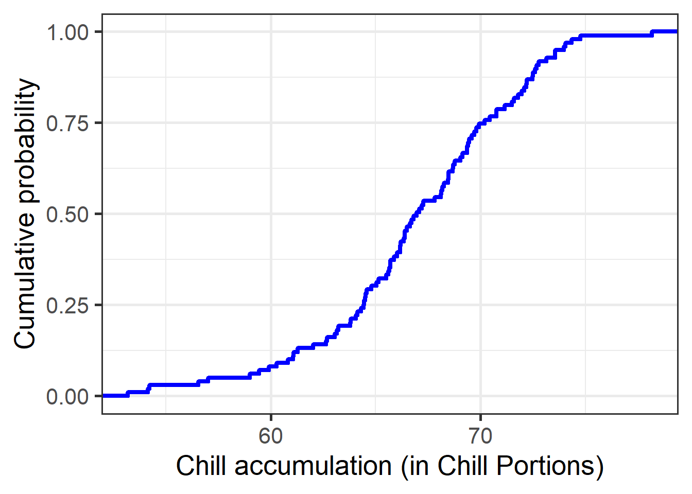
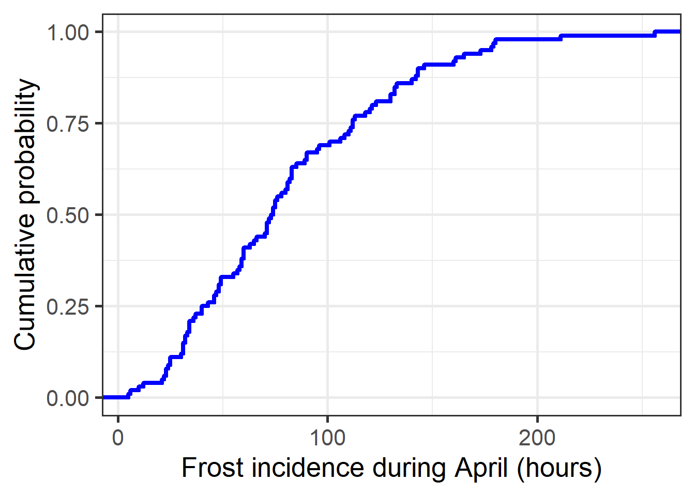
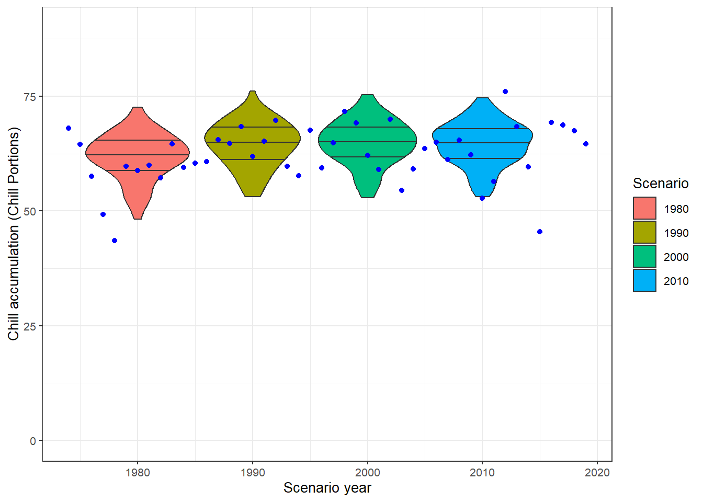
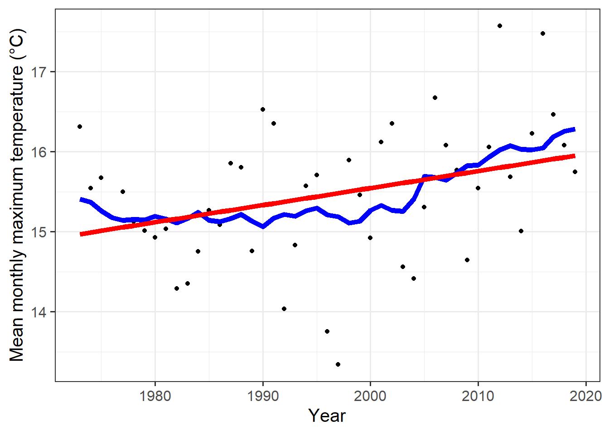
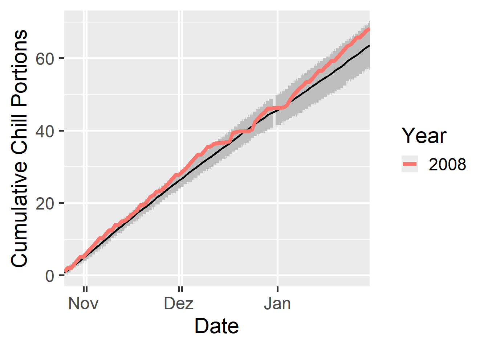

Winter dormancy may be defined as a trade-off between the length of the growing season and the protection against winter damage. To enter dormancy, vegetative growth is stopped in the late summer or early autumn and the shoots are converted into buds, where the shoot apical meristems are protected by tightly closed and hardened bud scales.
1.1.1 Dormancy Phases
Dormancy Establishment
Endodormancy 1: Ecodormancy
Growth resumption
1.1.2 Physological processes that regulate dormancy
Transport
Photohormones
Genetics
Carbohydrates dynamics
Exercises on Tree Dormancy
Put yourself in the place of a breeder who wants to calculate the temperature requirements of a newly released cultivar. Which method will you use to calculate the chilling and forcing periods? Please justify your answer
Statistical method is recommended to calculate the temperature requirements (chilling and forcing periods) of a newly released cultivar. This involves using partial least square regression analysis for daily temperatures over a continuous period.
Which are the advantages (2) of the BBCH scale compared with earlier scales?
Two advantages of the BBCH scale over traditional scale include: a. It was developed in a general frame for all the species b. It covers the whole development of a plant.
Classify the following phenological stages of sweet cherry according to the BBCH scale:
Phenological stages of cherry + Image 1: 51
Image 2: 63
Image 3: 87
Stages of Cherry
Chapter 4: Climate Change and impact projection
1.1 Drivers of Climate change include:
Sun: Warms the earth through radiation. It is an important driver of climate change on geological timescales, but not of recent climate change.
Aerosols: They are largely dusts. Suspensions of liquid, solid, or mixed particles with highly variable chemical composition and size distribution.
Clouds: Can have both cooling and warming effect.
Ozone: Surface (tropospheric) ozone: constituent of smog, health hazard (bad ozone). Greenhouse gas: presence in the stratosphere has a warming effect. Destroyed by chlorofluorocarbons (CFCs).
Surface albedo: Reflection of radiation by the land surface. Light surfaces (e.g. ice, snow) reflect almost all radiation, dark surfaces (ocean, dark soil, forest) very little.
Greenhouse gases: Atmospheric gases that trap heat on Earth. Greenhouse effects warms the planet.
Long-term drivers:
Exercises on Climate Change
List the main drivers of climate change at the decade to century scale, and briefly explain the mechanism through which the currently most important driver affects our climate.
Sun
Aerosols
Clouds
Ozone
Surface albedo
Greenhouse gases
Long-term drivers
Most important: GHGsGreenhouse effect + Raises Earth’s mean temperature: +14°C instead of -18°C without GHGs! + Major GHGs: water vapor, CO2 (carbon dioxide), CH4 (methane), N2O (nitrous oxide)
Explain briefly what is special about temperature dynamics of recent decades, and why we have good reasons to be concerned.
Since 1901 strong warming (almost) everywhere on Earth.Up to 8°C warmer than the 2003-2018 average. Precipitation anomalies (relative to median prec.) for Cologne/Bonn weather station. Some years with dry springs/summer.
What does the abbreviation ‘RCP’ stand for, how are RCPs defined, and what is their role in projecting future climates? Representative Concentration Pathways (RCPs). It is a new greenhouse forcing scenarios in the IPCC‘s5th Assessment Report. From RCP to inputs for climate change impact models.
Roles of RCP:
Briefly describe the 4 climate impact projection methods described in the fourth video.
Statistical models
Species distribution modeling
Process-based models
Climate analogue analysis
Chapter 5: Winter Chill Projections
Exercises on past chill projections
Sketch out three data access and processing challenges that had to be overcome in order to produce chill projections with state-of-the-art methodology.
Accessing Climate Data for Specific Locations: Previous climate datasets like AFRICLIM and ClimateWizard only provided large-scale data. To get weather data for specific locations without downloading too much extra information, an API was created to quickly access data for single sites
Converting Daily to Hourly Temperature Data: Chill models need hourly temperature data, but many databases only give daily averages. Early methods for converting daily to hourly data weren’t very good, especially in areas with unique temperatures. Improved algorithms were developed to estimate hourly temperatures more accurately from daily data
Handling Large Volumes of Climate Model Outputs: Studying different climate futures involves dealing with a lot of data from many climate models, which can be hard to manage. To handle this large amount of data effectively, workflows were streamlined and selective processing techniques were used
Outline, in your understanding, the basic steps that are necessary to make such projections.
Data Collection and Calibration: collect historical weather data and use it to calibrate a weather generator for realistic temperature simulations
Model Selection and Scenario Setup: choose relevant climate models and emission scenarios to explore various future climates
Generate Temperature Projections: downscale climate data, converting it to daily or hourly temperatures as needed for chill calculations
Chill Calculation: apply chill models to estimate chill accumulation across different climate scenarios
Analysis and Visualization: compare chill projections across models and scenarios and visualize the findings
Interpretation: validate projections with observed data where possible and assess agricultural impacts and adaptation needs
[1] 0 0 0 0 0 0 0 0 0 0 0 NA NA NA NA NA NA NA NA NA NA NA NA NA NA
[26] NA NA NA NA NA NA NA NA NA NA NA NA NA NA NA NA NA NA NA NA NA NA NA NA NA
[51] NA NA NA NA NA NA NA NA NA NA NA NA NA NA NA NA NA NA NA NA NA NA NA NA NA
[76] NA NA NA NA NA NA NA NA NA NA NA NA NA NA NA NA NA NA NA NA NA NA NA NA NA
Run this model on the Winters_hours_gaps dataset using the tempResponse() function.
Produce empirical temperature curve parameters for the Winters_hours_gaps dataset, and use them to predict hourly values from daily temperatures (this is very similar to the example above,but please make sure you understand what’s going on).
Loading data for 31 years from station 'GREATER ROCHESTER INTERNATIONAL AP'
================================================================================
Show code
weather[[1]][1:20,]
STATION DATE LATITUDE LONGITUDE ELEVATION
1 72529014768 1990-01-01 43.11723 -77.67539 164.5
2 72529014768 1990-01-02 43.11723 -77.67539 164.5
3 72529014768 1990-01-03 43.11723 -77.67539 164.5
4 72529014768 1990-01-04 43.11723 -77.67539 164.5
5 72529014768 1990-01-05 43.11723 -77.67539 164.5
6 72529014768 1990-01-06 43.11723 -77.67539 164.5
7 72529014768 1990-01-07 43.11723 -77.67539 164.5
8 72529014768 1990-01-08 43.11723 -77.67539 164.5
9 72529014768 1990-01-09 43.11723 -77.67539 164.5
10 72529014768 1990-01-10 43.11723 -77.67539 164.5
11 72529014768 1990-01-11 43.11723 -77.67539 164.5
12 72529014768 1990-01-12 43.11723 -77.67539 164.5
13 72529014768 1990-01-13 43.11723 -77.67539 164.5
14 72529014768 1990-01-14 43.11723 -77.67539 164.5
15 72529014768 1990-01-15 43.11723 -77.67539 164.5
16 72529014768 1990-01-16 43.11723 -77.67539 164.5
17 72529014768 1990-01-17 43.11723 -77.67539 164.5
18 72529014768 1990-01-18 43.11723 -77.67539 164.5
19 72529014768 1990-01-19 43.11723 -77.67539 164.5
20 72529014768 1990-01-20 43.11723 -77.67539 164.5
NAME TEMP
1 FREDERICK DOUGLASS GREATER ROCHESTER INTERNATIONAL AIRPORT, NY US 31.1
2 FREDERICK DOUGLASS GREATER ROCHESTER INTERNATIONAL AIRPORT, NY US 30.1
3 FREDERICK DOUGLASS GREATER ROCHESTER INTERNATIONAL AIRPORT, NY US 33.8
4 FREDERICK DOUGLASS GREATER ROCHESTER INTERNATIONAL AIRPORT, NY US 43.7
5 FREDERICK DOUGLASS GREATER ROCHESTER INTERNATIONAL AIRPORT, NY US 33.0
6 FREDERICK DOUGLASS GREATER ROCHESTER INTERNATIONAL AIRPORT, NY US 26.2
7 FREDERICK DOUGLASS GREATER ROCHESTER INTERNATIONAL AIRPORT, NY US 29.0
8 FREDERICK DOUGLASS GREATER ROCHESTER INTERNATIONAL AIRPORT, NY US 37.3
9 FREDERICK DOUGLASS GREATER ROCHESTER INTERNATIONAL AIRPORT, NY US 36.7
10 FREDERICK DOUGLASS GREATER ROCHESTER INTERNATIONAL AIRPORT, NY US 36.5
11 FREDERICK DOUGLASS GREATER ROCHESTER INTERNATIONAL AIRPORT, NY US 34.3
12 FREDERICK DOUGLASS GREATER ROCHESTER INTERNATIONAL AIRPORT, NY US 28.7
13 FREDERICK DOUGLASS GREATER ROCHESTER INTERNATIONAL AIRPORT, NY US 16.3
14 FREDERICK DOUGLASS GREATER ROCHESTER INTERNATIONAL AIRPORT, NY US 23.5
15 FREDERICK DOUGLASS GREATER ROCHESTER INTERNATIONAL AIRPORT, NY US 35.7
16 FREDERICK DOUGLASS GREATER ROCHESTER INTERNATIONAL AIRPORT, NY US 41.5
17 FREDERICK DOUGLASS GREATER ROCHESTER INTERNATIONAL AIRPORT, NY US 45.4
18 FREDERICK DOUGLASS GREATER ROCHESTER INTERNATIONAL AIRPORT, NY US 46.8
19 FREDERICK DOUGLASS GREATER ROCHESTER INTERNATIONAL AIRPORT, NY US 29.2
20 FREDERICK DOUGLASS GREATER ROCHESTER INTERNATIONAL AIRPORT, NY US 28.3
TEMP_ATTRIBUTES DEWP DEWP_ATTRIBUTES SLP SLP_ATTRIBUTES STP
1 24 25.0 24 1006.2 24 985.6
2 24 20.1 24 1022.9 24 1.8
3 24 22.0 24 1023.5 24 2.5
4 24 34.3 24 1012.1 24 991.5
5 24 26.3 24 1018.9 24 998.1
6 24 22.2 24 1018.1 24 997.0
7 24 20.6 24 1017.0 24 996.0
8 24 27.7 24 1012.2 24 991.5
9 24 27.4 24 1008.0 24 987.4
10 24 31.8 24 1002.7 24 982.3
11 24 29.2 24 1002.0 24 981.4
12 24 23.5 24 995.5 24 975.0
13 24 10.5 24 1015.8 24 994.6
14 24 15.0 24 1026.1 24 4.7
15 24 25.0 24 1020.2 24 999.2
16 24 37.0 24 1023.3 24 2.5
17 24 42.6 24 1020.9 24 0.2
18 24 42.4 24 1013.1 24 992.7
19 24 19.7 24 1027.7 24 6.6
20 24 21.1 24 1022.3 24 1.2
STP_ATTRIBUTES VISIB VISIB_ATTRIBUTES WDSP WDSP_ATTRIBUTES MXSPD GUST MAX
1 24 9.6 24 15.2 24 21.0 27.0 44.1
2 24 14.8 24 13.7 24 19.0 28.9 36.0
3 24 16.4 24 6.5 24 11.1 999.9 44.1
4 24 15.2 24 9.2 24 17.1 27.0 46.9
5 24 15.6 24 10.0 24 15.0 999.9 48.0
6 24 11.7 24 8.5 24 18.1 25.1 35.1
7 24 16.9 24 9.1 24 20.0 25.1 43.0
8 24 14.0 24 7.9 24 15.9 999.9 44.1
9 24 12.6 24 8.2 24 12.0 999.9 45.0
10 24 7.0 24 7.8 24 15.9 999.9 41.0
11 24 8.9 24 11.9 24 25.1 34.0 39.9
12 24 5.9 24 17.3 24 22.9 34.0 39.9
13 24 8.3 24 14.5 24 21.0 25.1 34.0
14 24 11.2 24 10.3 24 18.1 25.1 25.0
15 24 12.1 24 8.2 24 15.9 22.9 43.0
16 24 6.4 24 8.0 24 14.0 20.0 50.0
17 24 4.1 24 6.5 24 12.0 999.9 55.0
18 24 9.8 24 12.9 24 17.1 22.0 55.9
19 24 15.8 24 10.6 24 17.1 25.1 36.0
20 24 13.8 24 4.0 24 6.0 999.9 35.1
MAX_ATTRIBUTES MIN MIN_ATTRIBUTES PRCP PRCP_ATTRIBUTES SNDP FRSHTT
1 25.0 0.20 G 2.8 11000
2 * 26.1 0.04 G 2.8 0
3 * 27.0 0.00 G 2.0 0
4 * 37.9 0.02 D 0.8 10000
5 28.0 0.08 G 999.9 10000
6 19.0 0.00 G 999.9 101000
7 * 15.1 0.02 C 999.9 0
8 * 28.9 0.00 D 999.9 0
9 34.0 0.00 C 999.9 10000
10 33.1 * 0.08 G 999.9 111000
11 32.0 0.08 G 999.9 111000
12 21.0 * 0.08 G 999.9 1000
13 10.0 0.12 G 2.0 1000
14 * 18.0 0.00 G 0.8 1000
15 * 25.0 0.01 G 0.8 10000
16 * 37.0 0.00 G 999.9 110000
17 * 36.0 0.04 G 999.9 110000
18 36.0 * 0.35 G 999.9 10000
19 * 24.1 0.04 G 999.9 1000
20 * 23.0 0.00 G 999.9 0
Loading data for 31 years from station 'DANSVILLE MUNICIPAL ARPT'
================================================================================
Loading data for 31 years from station 'ROCHESTER'
================================================================================
Loading data for 31 years from station 'ROCHESTER'
================================================================================
Use the patch_daily_temperatures function to fill gaps
chill_simulations<-chill_comparison_full_seasons%>%filter(Data_source=="simulated")ggplot(chill_simulations,aes(x =Chill_portions))+stat_ecdf(geom ="step", lwd =1.5, col ="blue")+ylab("Cumulative probability")+xlab("Chill accumulation (in Chill Portions)")+theme_bw(base_size =20)

Produce similar plots for the number of freezing hours (<0°C) in April (or October, if your site is in the Southern Hemisphere) for your location of interest.
ggplot(chill_comparison_full_seasons,aes(x =Frost))+geom_histogram(binwidth =25,aes(fill =factor(Data_source)))+theme_bw(base_size =10)+labs(fill ="Data source")+xlab("Frost incidence during April (hours)")+ylab("Frequency")
Show code
chill_simulations<-chill_comparison_full_seasons%>%filter(Data_source=="simulated")ggplot(chill_simulations,aes(x =Frost))+stat_ecdf(geom ="step", lwd =1.5, col ="blue")+ylab("Cumulative probability")+xlab("Frost incidence during April (hours)")+theme_bw(base_size =20)

Chapter 14: Generating historic temperature scenarios
Exercises on historic temperature scenarios
For the location you chose for previous exercises, produce historic temperature scenarios representing several years of the historic record (your choice).
Show code
library(chillR)library(magrittr)require(kableExtra)# downloading weather station list for the vicinity of Rochesterstation_list<-handle_gsod(action ="list_stations", location=c(-77.60, 43.15))# downloading weather data for Greater Rochester International AP and convert it to chillR formatRochester_weather<-handle_gsod(action ="download_weather", location =station_list$chillR_code[1], time_interval =c(1973,2019))%>%handle_gsod()
Loading data for 47 years from station 'GREATER ROCHESTER INTERNATIONAL AP'
================================================================================
Show code
# check record for missing datafix_weather(Rochester_weather$'GREATER ROCHESTER INTERNATIONAL AP')$QC
# interpolating these gaps nowRochester<-fix_weather(Rochester_patched)Rochester_temps<-Rochester$weatherscenario_1980<-temperature_scenario_from_records(weather =Rochester_temps, year =1980)scenario_1980$'1980'$data
#what could have happened in 1980 not what happpenedtemps_1980<-temperature_generation(weather =Rochester_temps, years =c(1973, 2019), sim_years =c(2001, 2100), temperature_scenario =scenario_1980)
Warning: Absolute temperature scenario specified - calibration weather record
only used for simulating temperature variation, but not for the means
Produce chill distributions for these scenarios and plot them.
Show code
scenarios<-names(chill_hist_scenario_list)[1:4]all_scenarios<-chill_hist_scenario_list[[scenarios[1]]]%>%mutate(scenario =as.numeric(scenarios[1]))for(scinscenarios[2:4])all_scenarios<-all_scenarios%>%rbind(chill_hist_scenario_list[[sc]]%>%cbind( scenario=as.numeric(sc)))%>%filter(Perc_complete==100)# Let's compute the actual 'observed' chill for comparisonactual_chill<-tempResponse_daily_list(Rochester_temps, latitude =43.15, Start_JDay =305, End_JDay =59,models)[[1]]%>%filter(Perc_complete==100)ggplot(data =all_scenarios,aes(scenario,Chill_Portions, fill =factor(scenario)))+geom_violin(draw_quantiles =c(0.25, 0.5, 0.75))+ylab("Chill accumulation (Chill Portions)")+xlab("Scenario year")+theme_bw(base_size =10)+ylim(c(0,90))+geom_point(data =actual_chill,aes(End_year,Chill_Portions, fill ="blue"), col ="blue", show.legend =FALSE)+scale_fill_discrete(name ="Scenario", breaks =unique(all_scenarios$scenario))

Show code
temperature_means<-data.frame(Year =min(Rochester_temps$Year):max(Rochester_temps$Year), Tmin =aggregate(Rochester_temps$Tmin, FUN ="mean", by =list(Rochester_temps$Year))[,2], Tmax=aggregate(Rochester_temps$Tmax, FUN ="mean", by =list(Rochester_temps$Year))[,2])%>%mutate(runn_mean_Tmin =runn_mean(Tmin,15), runn_mean_Tmax =runn_mean(Tmax,15))Tmin_regression<-lm(Tmin~Year,temperature_means)Tmax_regression<-lm(Tmax~Year,temperature_means)temperature_means<-temperature_means%>%mutate(regression_Tmin =Tmin_regression$coefficients[1]+Tmin_regression$coefficients[2]*temperature_means$Year, regression_Tmax =Tmax_regression$coefficients[1]+Tmax_regression$coefficients[2]*temperature_means$Year)ggplot(temperature_means,aes(Year,Tmin))+geom_point()+geom_line(data =temperature_means,aes(Year,runn_mean_Tmin), lwd =2, col ="blue")+geom_line(data =temperature_means,aes(Year,regression_Tmin), lwd =2, col ="red")+theme_bw(base_size =15)+ylab("Mean monthly minimum temperature (°C)")
Show code
ggplot(temperature_means,aes(Year,Tmax))+geom_point()+geom_line(data =temperature_means,aes(Year,runn_mean_Tmax), lwd =2, col ="blue")+geom_line(data =temperature_means,aes(Year, regression_Tmax), lwd =2, col ="red")+theme_bw(base_size =15)+ylab("Mean monthly maximum temperature (°C)")

Chapter 15: Future temperature scenarios
*Exercises on future temperature scenarios
Briefly describe the differences between the RCPs and the SSPs.
Representative Concentration Pathways (RCPs) are climate change scenarios to project future greenhouse gas concentrations.These pathways (or trajectories) describe future greenhouse gas concentrations (not emissions) and have been formally adopted by the IPCC. The pathways describe different climate change scenarios, all of which were considered possible depending on the amount of greenhouse gases (GHG) emitted in the years to come.
Shared Socioeconomic Pathways (SSPs) are climate change scenarios of projected socioeconomic global changes up to 2100 as defined in the IPCC Sixth Assessment Report on climate change in 2021.The SRES scenarios are “baseline” (or “reference”) scenarios, which means that they do not take into account any current or future measures to limit greenhouse gas (GHG) emissions.
A major difference between both models is that RCPs focus on Emissions and Radiative Forcing while SSPs emphasize Socioeconomic Pathways.In phenology SSPs integrate societal drivers, allowing phenologists to link temperature scenarios with land use changes, habitat fragmentation, or conservation efforts.
Chapter 16: Generating CMIP6 temperature scenarios
Exercises on generating CMIP6 temperature scenarios
Analyze the historic and future impact of climate change on two agroclimatic metrics of your choice, for the location you’ve chosen for your earlier analyses.
Show code
require(chillR)library(dplyr)library(ecmwfr)require(tidyverse)#read Rochester_tempsRochester_temps<-read_tab("C:/Users/Home/Documents/R Files/Trial Bookdown/data_New_York/Rochester_temps.csv")location=c(-77.60, 43.15)#Rochesterarea<-c(45, -79, 40, -71)download_cmip6_ecmwfr( scenarios =c("ssp126", "ssp245", "ssp370", "ssp585"), area =area, key ='e1bd6995-c569-4df1-bbe8-3549cb586e4a', model ='default', frequency ='monthly', variable =c('Tmin', 'Tmax'), year_start =2015, year_end =2100)
---------------
Download of scenario: ssp1_2_6
---------------
File tmax_ssp1_2_6_access_cm2_monthly_45_-79_40_-71.zip is already downloaded
File tmax_ssp1_2_6_awi_cm_1_1_mr_monthly_45_-79_40_-71.zip is already downloaded
File tmax_ssp1_2_6_bcc_csm2_mr_monthly_45_-79_40_-71.zip is already downloaded
File tmax_ssp1_2_6_canesm5_monthly_45_-79_40_-71.zip is already downloaded
File tmax_ssp1_2_6_cmcc_esm2_monthly_45_-79_40_-71.zip is already downloaded
File tmax_ssp1_2_6_cnrm_cm6_1_hr_monthly_45_-79_40_-71.zip is already downloaded
File tmax_ssp1_2_6_fio_esm_2_0_monthly_45_-79_40_-71.zip is already downloaded
File tmax_ssp1_2_6_inm_cm5_0_monthly_45_-79_40_-71.zip is already downloaded
File tmax_ssp1_2_6_ipsl_cm6a_lr_monthly_45_-79_40_-71.zip is already downloaded
File tmax_ssp1_2_6_miroc6_monthly_45_-79_40_-71.zip is already downloaded
File tmax_ssp1_2_6_miroc_es2l_monthly_45_-79_40_-71.zip is already downloaded
File tmax_ssp1_2_6_mri_esm2_0_monthly_45_-79_40_-71.zip is already downloaded
File tmax_ssp1_2_6_cesm2_monthly_45_-79_40_-71.zip is already downloaded
File tmax_ssp1_2_6_cnrm_cm6_1_monthly_45_-79_40_-71.zip is already downloaded
File tmax_ssp1_2_6_cnrm_esm2_1_monthly_45_-79_40_-71.zip is already downloaded
File tmax_ssp1_2_6_ec_earth3_veg_lr_monthly_45_-79_40_-71.zip is already downloaded
File tmax_ssp1_2_6_fgoals_g3_monthly_45_-79_40_-71.zip is already downloaded
File tmax_ssp1_2_6_gfdl_esm4_monthly_45_-79_40_-71.zip is already downloaded
File tmax_ssp1_2_6_inm_cm4_8_monthly_45_-79_40_-71.zip is already downloaded
File tmax_ssp1_2_6_mpi_esm1_2_lr_monthly_45_-79_40_-71.zip is already downloaded
File tmax_ssp1_2_6_nesm3_monthly_45_-79_40_-71.zip is already downloaded
File tmax_ssp1_2_6_ukesm1_0_ll_monthly_45_-79_40_-71.zip is already downloaded
File tmin_ssp1_2_6_access_cm2_monthly_45_-79_40_-71.zip is already downloaded
File tmin_ssp1_2_6_awi_cm_1_1_mr_monthly_45_-79_40_-71.zip is already downloaded
File tmin_ssp1_2_6_bcc_csm2_mr_monthly_45_-79_40_-71.zip is already downloaded
File tmin_ssp1_2_6_canesm5_monthly_45_-79_40_-71.zip is already downloaded
File tmin_ssp1_2_6_cmcc_esm2_monthly_45_-79_40_-71.zip is already downloaded
File tmin_ssp1_2_6_cnrm_cm6_1_hr_monthly_45_-79_40_-71.zip is already downloaded
File tmin_ssp1_2_6_fio_esm_2_0_monthly_45_-79_40_-71.zip is already downloaded
File tmin_ssp1_2_6_inm_cm5_0_monthly_45_-79_40_-71.zip is already downloaded
File tmin_ssp1_2_6_ipsl_cm6a_lr_monthly_45_-79_40_-71.zip is already downloaded
File tmin_ssp1_2_6_miroc6_monthly_45_-79_40_-71.zip is already downloaded
File tmin_ssp1_2_6_miroc_es2l_monthly_45_-79_40_-71.zip is already downloaded
File tmin_ssp1_2_6_mri_esm2_0_monthly_45_-79_40_-71.zip is already downloaded
File tmin_ssp1_2_6_cesm2_monthly_45_-79_40_-71.zip is already downloaded
File tmin_ssp1_2_6_cnrm_cm6_1_monthly_45_-79_40_-71.zip is already downloaded
File tmin_ssp1_2_6_cnrm_esm2_1_monthly_45_-79_40_-71.zip is already downloaded
File tmin_ssp1_2_6_ec_earth3_veg_lr_monthly_45_-79_40_-71.zip is already downloaded
File tmin_ssp1_2_6_fgoals_g3_monthly_45_-79_40_-71.zip is already downloaded
File tmin_ssp1_2_6_gfdl_esm4_monthly_45_-79_40_-71.zip is already downloaded
File tmin_ssp1_2_6_inm_cm4_8_monthly_45_-79_40_-71.zip is already downloaded
File tmin_ssp1_2_6_mpi_esm1_2_lr_monthly_45_-79_40_-71.zip is already downloaded
File tmin_ssp1_2_6_nesm3_monthly_45_-79_40_-71.zip is already downloaded
File tmin_ssp1_2_6_ukesm1_0_ll_monthly_45_-79_40_-71.zip is already downloaded
In case of ssp1_2_6: The download request is empty after filtering blacklisted scenario-model-variable combinations and already downloaded files.
---------------
Download of scenario: ssp2_4_5
---------------
File tmax_ssp2_4_5_access_cm2_monthly_45_-79_40_-71.zip is already downloaded
File tmax_ssp2_4_5_awi_cm_1_1_mr_monthly_45_-79_40_-71.zip is already downloaded
File tmax_ssp2_4_5_bcc_csm2_mr_monthly_45_-79_40_-71.zip is already downloaded
File tmax_ssp2_4_5_cmcc_esm2_monthly_45_-79_40_-71.zip is already downloaded
File tmax_ssp2_4_5_cnrm_cm6_1_hr_monthly_45_-79_40_-71.zip is already downloaded
File tmax_ssp2_4_5_fio_esm_2_0_monthly_45_-79_40_-71.zip is already downloaded
File tmax_ssp2_4_5_inm_cm5_0_monthly_45_-79_40_-71.zip is already downloaded
File tmax_ssp2_4_5_ipsl_cm6a_lr_monthly_45_-79_40_-71.zip is already downloaded
File tmax_ssp2_4_5_miroc6_monthly_45_-79_40_-71.zip is already downloaded
File tmax_ssp2_4_5_miroc_es2l_monthly_45_-79_40_-71.zip is already downloaded
File tmax_ssp2_4_5_mri_esm2_0_monthly_45_-79_40_-71.zip is already downloaded
File tmax_ssp2_4_5_cesm2_monthly_45_-79_40_-71.zip is already downloaded
File tmax_ssp2_4_5_cnrm_cm6_1_monthly_45_-79_40_-71.zip is already downloaded
File tmax_ssp2_4_5_cnrm_esm2_1_monthly_45_-79_40_-71.zip is already downloaded
File tmax_ssp2_4_5_ec_earth3_cc_monthly_45_-79_40_-71.zip is already downloaded
File tmax_ssp2_4_5_ec_earth3_veg_lr_monthly_45_-79_40_-71.zip is already downloaded
File tmax_ssp2_4_5_fgoals_g3_monthly_45_-79_40_-71.zip is already downloaded
File tmax_ssp2_4_5_gfdl_esm4_monthly_45_-79_40_-71.zip is already downloaded
File tmax_ssp2_4_5_inm_cm4_8_monthly_45_-79_40_-71.zip is already downloaded
File tmax_ssp2_4_5_mpi_esm1_2_lr_monthly_45_-79_40_-71.zip is already downloaded
File tmax_ssp2_4_5_nesm3_monthly_45_-79_40_-71.zip is already downloaded
File tmax_ssp2_4_5_ukesm1_0_ll_monthly_45_-79_40_-71.zip is already downloaded
File tmin_ssp2_4_5_access_cm2_monthly_45_-79_40_-71.zip is already downloaded
File tmin_ssp2_4_5_awi_cm_1_1_mr_monthly_45_-79_40_-71.zip is already downloaded
File tmin_ssp2_4_5_bcc_csm2_mr_monthly_45_-79_40_-71.zip is already downloaded
File tmin_ssp2_4_5_cmcc_esm2_monthly_45_-79_40_-71.zip is already downloaded
File tmin_ssp2_4_5_cnrm_cm6_1_hr_monthly_45_-79_40_-71.zip is already downloaded
File tmin_ssp2_4_5_fio_esm_2_0_monthly_45_-79_40_-71.zip is already downloaded
File tmin_ssp2_4_5_inm_cm5_0_monthly_45_-79_40_-71.zip is already downloaded
File tmin_ssp2_4_5_ipsl_cm6a_lr_monthly_45_-79_40_-71.zip is already downloaded
File tmin_ssp2_4_5_miroc6_monthly_45_-79_40_-71.zip is already downloaded
File tmin_ssp2_4_5_miroc_es2l_monthly_45_-79_40_-71.zip is already downloaded
File tmin_ssp2_4_5_mri_esm2_0_monthly_45_-79_40_-71.zip is already downloaded
File tmin_ssp2_4_5_cesm2_monthly_45_-79_40_-71.zip is already downloaded
File tmin_ssp2_4_5_cnrm_cm6_1_monthly_45_-79_40_-71.zip is already downloaded
File tmin_ssp2_4_5_cnrm_esm2_1_monthly_45_-79_40_-71.zip is already downloaded
File tmin_ssp2_4_5_ec_earth3_cc_monthly_45_-79_40_-71.zip is already downloaded
File tmin_ssp2_4_5_ec_earth3_veg_lr_monthly_45_-79_40_-71.zip is already downloaded
File tmin_ssp2_4_5_fgoals_g3_monthly_45_-79_40_-71.zip is already downloaded
File tmin_ssp2_4_5_gfdl_esm4_monthly_45_-79_40_-71.zip is already downloaded
File tmin_ssp2_4_5_inm_cm4_8_monthly_45_-79_40_-71.zip is already downloaded
File tmin_ssp2_4_5_mpi_esm1_2_lr_monthly_45_-79_40_-71.zip is already downloaded
File tmin_ssp2_4_5_nesm3_monthly_45_-79_40_-71.zip is already downloaded
File tmin_ssp2_4_5_ukesm1_0_ll_monthly_45_-79_40_-71.zip is already downloaded
In case of ssp2_4_5: The download request is empty after filtering blacklisted scenario-model-variable combinations and already downloaded files.
---------------
Download of scenario: ssp3_7_0
---------------
File tmax_ssp3_7_0_access_cm2_monthly_45_-79_40_-71.zip is already downloaded
File tmax_ssp3_7_0_awi_cm_1_1_mr_monthly_45_-79_40_-71.zip is already downloaded
File tmax_ssp3_7_0_bcc_csm2_mr_monthly_45_-79_40_-71.zip is already downloaded
File tmax_ssp3_7_0_cnrm_cm6_1_hr_monthly_45_-79_40_-71.zip is already downloaded
File tmax_ssp3_7_0_ec_earth3_aerchem_monthly_45_-79_40_-71.zip is already downloaded
File tmax_ssp3_7_0_inm_cm5_0_monthly_45_-79_40_-71.zip is already downloaded
File tmax_ssp3_7_0_ipsl_cm6a_lr_monthly_45_-79_40_-71.zip is already downloaded
File tmax_ssp3_7_0_miroc6_monthly_45_-79_40_-71.zip is already downloaded
File tmax_ssp3_7_0_miroc_es2l_monthly_45_-79_40_-71.zip is already downloaded
File tmax_ssp3_7_0_mri_esm2_0_monthly_45_-79_40_-71.zip is already downloaded
File tmax_ssp3_7_0_cesm2_monthly_45_-79_40_-71.zip is already downloaded
File tmax_ssp3_7_0_cnrm_cm6_1_monthly_45_-79_40_-71.zip is already downloaded
File tmax_ssp3_7_0_cnrm_esm2_1_monthly_45_-79_40_-71.zip is already downloaded
File tmax_ssp3_7_0_ec_earth3_veg_lr_monthly_45_-79_40_-71.zip is already downloaded
File tmax_ssp3_7_0_fgoals_g3_monthly_45_-79_40_-71.zip is already downloaded
File tmax_ssp3_7_0_gfdl_esm4_monthly_45_-79_40_-71.zip is already downloaded
File tmax_ssp3_7_0_inm_cm4_8_monthly_45_-79_40_-71.zip is already downloaded
File tmax_ssp3_7_0_mpi_esm1_2_lr_monthly_45_-79_40_-71.zip is already downloaded
File tmax_ssp3_7_0_ukesm1_0_ll_monthly_45_-79_40_-71.zip is already downloaded
File tmin_ssp3_7_0_access_cm2_monthly_45_-79_40_-71.zip is already downloaded
File tmin_ssp3_7_0_awi_cm_1_1_mr_monthly_45_-79_40_-71.zip is already downloaded
File tmin_ssp3_7_0_bcc_csm2_mr_monthly_45_-79_40_-71.zip is already downloaded
File tmin_ssp3_7_0_cnrm_cm6_1_hr_monthly_45_-79_40_-71.zip is already downloaded
File tmin_ssp3_7_0_ec_earth3_aerchem_monthly_45_-79_40_-71.zip is already downloaded
File tmin_ssp3_7_0_inm_cm5_0_monthly_45_-79_40_-71.zip is already downloaded
File tmin_ssp3_7_0_ipsl_cm6a_lr_monthly_45_-79_40_-71.zip is already downloaded
File tmin_ssp3_7_0_miroc6_monthly_45_-79_40_-71.zip is already downloaded
File tmin_ssp3_7_0_miroc_es2l_monthly_45_-79_40_-71.zip is already downloaded
File tmin_ssp3_7_0_mri_esm2_0_monthly_45_-79_40_-71.zip is already downloaded
File tmin_ssp3_7_0_cesm2_monthly_45_-79_40_-71.zip is already downloaded
File tmin_ssp3_7_0_cnrm_cm6_1_monthly_45_-79_40_-71.zip is already downloaded
File tmin_ssp3_7_0_cnrm_esm2_1_monthly_45_-79_40_-71.zip is already downloaded
File tmin_ssp3_7_0_ec_earth3_veg_lr_monthly_45_-79_40_-71.zip is already downloaded
File tmin_ssp3_7_0_fgoals_g3_monthly_45_-79_40_-71.zip is already downloaded
File tmin_ssp3_7_0_gfdl_esm4_monthly_45_-79_40_-71.zip is already downloaded
File tmin_ssp3_7_0_inm_cm4_8_monthly_45_-79_40_-71.zip is already downloaded
File tmin_ssp3_7_0_mpi_esm1_2_lr_monthly_45_-79_40_-71.zip is already downloaded
File tmin_ssp3_7_0_ukesm1_0_ll_monthly_45_-79_40_-71.zip is already downloaded
In case of ssp3_7_0: The download request is empty after filtering blacklisted scenario-model-variable combinations and already downloaded files.
---------------
Download of scenario: ssp5_8_5
---------------
File tmax_ssp5_8_5_access_cm2_monthly_45_-79_40_-71.zip is already downloaded
File tmax_ssp5_8_5_awi_cm_1_1_mr_monthly_45_-79_40_-71.zip is already downloaded
File tmax_ssp5_8_5_bcc_csm2_mr_monthly_45_-79_40_-71.zip is already downloaded
File tmax_ssp5_8_5_cmcc_esm2_monthly_45_-79_40_-71.zip is already downloaded
File tmax_ssp5_8_5_cnrm_cm6_1_hr_monthly_45_-79_40_-71.zip is already downloaded
File tmax_ssp5_8_5_fio_esm_2_0_monthly_45_-79_40_-71.zip is already downloaded
File tmax_ssp5_8_5_inm_cm5_0_monthly_45_-79_40_-71.zip is already downloaded
File tmax_ssp5_8_5_ipsl_cm6a_lr_monthly_45_-79_40_-71.zip is already downloaded
File tmax_ssp5_8_5_miroc6_monthly_45_-79_40_-71.zip is already downloaded
File tmax_ssp5_8_5_miroc_es2l_monthly_45_-79_40_-71.zip is already downloaded
File tmax_ssp5_8_5_mri_esm2_0_monthly_45_-79_40_-71.zip is already downloaded
File tmax_ssp5_8_5_cesm2_monthly_45_-79_40_-71.zip is already downloaded
File tmax_ssp5_8_5_ciesm_monthly_45_-79_40_-71.zip is already downloaded
File tmax_ssp5_8_5_cnrm_cm6_1_monthly_45_-79_40_-71.zip is already downloaded
File tmax_ssp5_8_5_cnrm_esm2_1_monthly_45_-79_40_-71.zip is already downloaded
File tmax_ssp5_8_5_ec_earth3_cc_monthly_45_-79_40_-71.zip is already downloaded
File tmax_ssp5_8_5_ec_earth3_veg_lr_monthly_45_-79_40_-71.zip is already downloaded
File tmax_ssp5_8_5_fgoals_g3_monthly_45_-79_40_-71.zip is already downloaded
File tmax_ssp5_8_5_gfdl_esm4_monthly_45_-79_40_-71.zip is already downloaded
File tmax_ssp5_8_5_inm_cm4_8_monthly_45_-79_40_-71.zip is already downloaded
File tmax_ssp5_8_5_mpi_esm1_2_lr_monthly_45_-79_40_-71.zip is already downloaded
File tmax_ssp5_8_5_nesm3_monthly_45_-79_40_-71.zip is already downloaded
File tmax_ssp5_8_5_ukesm1_0_ll_monthly_45_-79_40_-71.zip is already downloaded
File tmin_ssp5_8_5_access_cm2_monthly_45_-79_40_-71.zip is already downloaded
File tmin_ssp5_8_5_awi_cm_1_1_mr_monthly_45_-79_40_-71.zip is already downloaded
File tmin_ssp5_8_5_bcc_csm2_mr_monthly_45_-79_40_-71.zip is already downloaded
File tmin_ssp5_8_5_cmcc_esm2_monthly_45_-79_40_-71.zip is already downloaded
File tmin_ssp5_8_5_cnrm_cm6_1_hr_monthly_45_-79_40_-71.zip is already downloaded
File tmin_ssp5_8_5_fio_esm_2_0_monthly_45_-79_40_-71.zip is already downloaded
File tmin_ssp5_8_5_inm_cm5_0_monthly_45_-79_40_-71.zip is already downloaded
File tmin_ssp5_8_5_ipsl_cm6a_lr_monthly_45_-79_40_-71.zip is already downloaded
File tmin_ssp5_8_5_miroc6_monthly_45_-79_40_-71.zip is already downloaded
File tmin_ssp5_8_5_miroc_es2l_monthly_45_-79_40_-71.zip is already downloaded
File tmin_ssp5_8_5_mri_esm2_0_monthly_45_-79_40_-71.zip is already downloaded
File tmin_ssp5_8_5_cesm2_monthly_45_-79_40_-71.zip is already downloaded
File tmin_ssp5_8_5_ciesm_monthly_45_-79_40_-71.zip is already downloaded
File tmin_ssp5_8_5_cnrm_cm6_1_monthly_45_-79_40_-71.zip is already downloaded
File tmin_ssp5_8_5_cnrm_esm2_1_monthly_45_-79_40_-71.zip is already downloaded
File tmin_ssp5_8_5_ec_earth3_cc_monthly_45_-79_40_-71.zip is already downloaded
File tmin_ssp5_8_5_ec_earth3_veg_lr_monthly_45_-79_40_-71.zip is already downloaded
File tmin_ssp5_8_5_fgoals_g3_monthly_45_-79_40_-71.zip is already downloaded
File tmin_ssp5_8_5_gfdl_esm4_monthly_45_-79_40_-71.zip is already downloaded
File tmin_ssp5_8_5_inm_cm4_8_monthly_45_-79_40_-71.zip is already downloaded
File tmin_ssp5_8_5_mpi_esm1_2_lr_monthly_45_-79_40_-71.zip is already downloaded
File tmin_ssp5_8_5_nesm3_monthly_45_-79_40_-71.zip is already downloaded
File tmin_ssp5_8_5_ukesm1_0_ll_monthly_45_-79_40_-71.zip is already downloaded
In case of ssp5_8_5: The download request is empty after filtering blacklisted scenario-model-variable combinations and already downloaded files.
Show code
download_baseline_cmip6_ecmwfr( area =area, key ='e1bd6995-c569-4df1-bbe8-3549cb586e4a', model ='match_downloaded', frequency ='monthly', variable =c('Tmin', 'Tmax'), year_start =1986, year_end =2014, month =1:12)
Warning in download_cmip6_ecmwfr(scenarios = "historical", area = area, : At least one of the provided model name did match any of the known GCM model names. The function will try to download it anyway, but it is likely to fail. Please check if there are no typos in the GCMs name.
This affects the provided model names: r1i1p1f1_historical_ACCESS-CM2_Amon r1i1p1f1_ssp126_ACCESS-CM2_Amon r1i1p1f1_ssp245_ACCESS-CM2_Amon r1i1p1f1_ssp370_ACCESS-CM2_Amon r1i1p1f1_ssp585_ACCESS-CM2_Amon r1i1p1f1_historical_AWI-CM-1-1-MR_Amon r1i1p1f1_ssp126_AWI-CM-1-1-MR_Amon r1i1p1f1_ssp245_AWI-CM-1-1-MR_Amon r1i1p1f1_ssp370_AWI-CM-1-1-MR_Amon r1i1p1f1_ssp585_AWI-CM-1-1-MR_Amon r1i1p1f1_ssp126_BCC-CSM2-MR_Amon r1i1p1f1_ssp245_BCC-CSM2-MR_Amon r1i1p1f1_ssp370_BCC-CSM2-MR_Amon r1i1p1f1_ssp585_BCC-CSM2-MR_Amon r1i1p1f1_historical_CanESM5_Amon r1i1p1f1_ssp126_CanESM5_Amon r4i1p1f1_ssp126_CESM2_Amon r4i1p1f1_ssp245_CESM2_Amon r4i1p1f1_ssp370_CESM2_Amon r4i1p1f1_ssp585_CESM2_Amon r1i1p1f1_historical_CIESM_Amon r1i1p1f1_ssp585_CIESM_Amon r1i1p1f1_historical_CMCC-ESM2_Amon r1i1p1f1_ssp126_CMCC-ESM2_Amon r1i1p1f1_ssp245_CMCC-ESM2_Amon r1i1p1f1_ssp585_CMCC-ESM2_Amon r1i1p1f2_historical_CNRM-CM6-1-HR_Amon r1i1p1f2_ssp126_CNRM-CM6-1-HR_Amon r1i1p1f2_ssp245_CNRM-CM6-1-HR_Amon r1i1p1f2_ssp370_CNRM-CM6-1-HR_Amon r1i1p1f2_ssp585_CNRM-CM6-1-HR_Amon r1i1p1f2_historical_CNRM-CM6-1_Amon r1i1p1f2_ssp126_CNRM-CM6-1_Amon r1i1p1f2_ssp245_CNRM-CM6-1_Amon r1i1p1f2_ssp370_CNRM-CM6-1_Amon r1i1p1f2_ssp585_CNRM-CM6-1_Amon r1i1p1f2_historical_CNRM-ESM2-1_Amon r1i1p1f2_ssp126_CNRM-ESM2-1_Amon r1i1p1f2_ssp245_CNRM-ESM2-1_Amon r1i1p1f2_ssp370_CNRM-ESM2-1_Amon r1i1p1f2_ssp585_CNRM-ESM2-1_Amon r1i1p1f1_historical_EC-Earth3-AerChem_Amon r1i1p1f1_ssp370_EC-Earth3-AerChem_Amon r1i1p1f1_historical_EC-Earth3-CC_Amon r1i1p1f1_ssp245_EC-Earth3-CC_Amon r1i1p1f1_ssp585_EC-Earth3-CC_Amon r1i1p1f1_historical_EC-Earth3-Veg-LR_Amon r1i1p1f1_ssp126_EC-Earth3-Veg-LR_Amon r1i1p1f1_ssp245_EC-Earth3-Veg-LR_Amon r1i1p1f1_ssp370_EC-Earth3-Veg-LR_Amon r1i1p1f1_ssp585_EC-Earth3-Veg-LR_Amon r1i1p1f1_historical_FGOALS-g3_Amon r1i1p1f1_ssp126_FGOALS-g3_Amon r1i1p1f1_ssp245_FGOALS-g3_Amon r1i1p1f1_ssp370_FGOALS-g3_Amon r1i1p1f1_ssp585_FGOALS-g3_Amon r1i1p1f1_historical_FIO-ESM-2-0_Amon r1i1p1f1_ssp126_FIO-ESM-2-0_Amon r1i1p1f1_ssp245_FIO-ESM-2-0_Amon r1i1p1f1_ssp585_FIO-ESM-2-0_Amon r1i1p1f1_historical_GFDL-ESM4_Amon r1i1p1f1_ssp126_GFDL-ESM4_Amon r1i1p1f1_ssp245_GFDL-ESM4_Amon r1i1p1f1_ssp370_GFDL-ESM4_Amon r1i1p1f1_ssp585_GFDL-ESM4_Amon r1i1p1f1_historical_INM-CM4-8_Amon r1i1p1f1_ssp126_INM-CM4-8_Amon r1i1p1f1_ssp245_INM-CM4-8_Amon r1i1p1f1_ssp370_INM-CM4-8_Amon r1i1p1f1_ssp585_INM-CM4-8_Amon r1i1p1f1_historical_INM-CM5-0_Amon r1i1p1f1_ssp126_INM-CM5-0_Amon r1i1p1f1_ssp245_INM-CM5-0_Amon r1i1p1f1_ssp370_INM-CM5-0_Amon r1i1p1f1_ssp585_INM-CM5-0_Amon r1i1p1f1_historical_IPSL-CM6A-LR_Amon r1i1p1f1_ssp126_IPSL-CM6A-LR_Amon r1i1p1f1_ssp245_IPSL-CM6A-LR_Amon r1i1p1f1_ssp370_IPSL-CM6A-LR_Amon r1i1p1f1_ssp585_IPSL-CM6A-LR_Amon r1i1p1f2_historical_MIROC-ES2L_Amon r1i1p1f2_ssp126_MIROC-ES2L_Amon r1i1p1f2_ssp245_MIROC-ES2L_Amon r1i1p1f2_ssp370_MIROC-ES2L_Amon r1i1p1f2_ssp585_MIROC-ES2L_Amon r1i1p1f1_historical_MIROC6_Amon r1i1p1f1_ssp126_MIROC6_Amon r1i1p1f1_ssp245_MIROC6_Amon r1i1p1f1_ssp370_MIROC6_Amon r1i1p1f1_ssp585_MIROC6_Amon r1i1p1f1_historical_MPI-ESM1-2-LR_Amon r1i1p1f1_ssp126_MPI-ESM1-2-LR_Amon r1i1p1f1_ssp245_MPI-ESM1-2-LR_Amon r1i1p1f1_ssp370_MPI-ESM1-2-LR_Amon r1i1p1f1_ssp585_MPI-ESM1-2-LR_Amon r1i1p1f1_historical_MRI-ESM2-0_Amon r1i1p1f1_ssp126_MRI-ESM2-0_Amon r1i1p1f1_ssp245_MRI-ESM2-0_Amon r1i1p1f1_ssp370_MRI-ESM2-0_Amon r1i1p1f1_ssp585_MRI-ESM2-0_Amon r1i1p1f1_historical_NESM3_Amon r1i1p1f1_ssp126_NESM3_Amon r1i1p1f1_ssp245_NESM3_Amon r1i1p1f1_ssp585_NESM3_Amon r1i1p1f2_ssp126_UKESM1-0-LL_Amon r13i1p1f2_ssp245_UKESM1-0-LL_Amon r1i1p1f2_ssp370_UKESM1-0-LL_Amon r1i1p1f2_ssp585_UKESM1-0-LL_Amon monthly_cm2 1_1_mr 45_monthly_canesm5 45_monthly_ciesm monthly_esm2 1_hr 1 aerchem cc veg_lr monthly_g3 2_0 monthly_esm4 8 0 lr monthly_es2l 45_monthly_miroc6 2_lr 45_monthly_nesm3 access_cm2 awi_cm_1_1_mr bcc_csm2_mr canesm5 cesm2 cmcc_esm2 cnrm_cm6_1_hr cnrm_cm6_1 cnrm_esm2_1 ec_earth3_veg_lr fgoals_g3 fio_esm_2_0 gfdl_esm4 inm_cm4_8 inm_cm5_0 ipsl_cm6a_lr miroc_es2l miroc6 mpi_esm1_2_lr mri_esm2_0 nesm3 ukesm1_0_ll ec_earth3_cc ec_earth3_aerchem ciesm
---------------
Download of scenario: historical
---------------
File tmax_historical_access_cm2_monthly_45_-79_40_-71.zip is already downloaded
File tmax_historical_awi_cm_1_1_mr_monthly_45_-79_40_-71.zip is already downloaded
File tmax_historical_canesm5_monthly_45_-79_40_-71.zip is already downloaded
File tmax_historical_cmcc_esm2_monthly_45_-79_40_-71.zip is already downloaded
File tmax_historical_cnrm_cm6_1_hr_monthly_45_-79_40_-71.zip is already downloaded
File tmax_historical_cnrm_cm6_1_monthly_45_-79_40_-71.zip is already downloaded
File tmax_historical_cnrm_esm2_1_monthly_45_-79_40_-71.zip is already downloaded
File tmax_historical_ec_earth3_veg_lr_monthly_45_-79_40_-71.zip is already downloaded
File tmax_historical_fgoals_g3_monthly_45_-79_40_-71.zip is already downloaded
File tmax_historical_fio_esm_2_0_monthly_45_-79_40_-71.zip is already downloaded
File tmax_historical_gfdl_esm4_monthly_45_-79_40_-71.zip is already downloaded
File tmax_historical_inm_cm4_8_monthly_45_-79_40_-71.zip is already downloaded
File tmax_historical_inm_cm5_0_monthly_45_-79_40_-71.zip is already downloaded
File tmax_historical_ipsl_cm6a_lr_monthly_45_-79_40_-71.zip is already downloaded
File tmax_historical_miroc_es2l_monthly_45_-79_40_-71.zip is already downloaded
File tmax_historical_miroc6_monthly_45_-79_40_-71.zip is already downloaded
File tmax_historical_mpi_esm1_2_lr_monthly_45_-79_40_-71.zip is already downloaded
File tmax_historical_mri_esm2_0_monthly_45_-79_40_-71.zip is already downloaded
File tmax_historical_nesm3_monthly_45_-79_40_-71.zip is already downloaded
File tmax_historical_ec_earth3_cc_monthly_45_-79_40_-71.zip is already downloaded
File tmax_historical_ec_earth3_aerchem_monthly_45_-79_40_-71.zip is already downloaded
File tmax_historical_ciesm_monthly_45_-79_40_-71.zip is already downloaded
File tmin_historical_access_cm2_monthly_45_-79_40_-71.zip is already downloaded
File tmin_historical_awi_cm_1_1_mr_monthly_45_-79_40_-71.zip is already downloaded
File tmin_historical_canesm5_monthly_45_-79_40_-71.zip is already downloaded
File tmin_historical_cmcc_esm2_monthly_45_-79_40_-71.zip is already downloaded
File tmin_historical_cnrm_cm6_1_hr_monthly_45_-79_40_-71.zip is already downloaded
File tmin_historical_cnrm_cm6_1_monthly_45_-79_40_-71.zip is already downloaded
File tmin_historical_cnrm_esm2_1_monthly_45_-79_40_-71.zip is already downloaded
File tmin_historical_ec_earth3_veg_lr_monthly_45_-79_40_-71.zip is already downloaded
File tmin_historical_fgoals_g3_monthly_45_-79_40_-71.zip is already downloaded
File tmin_historical_fio_esm_2_0_monthly_45_-79_40_-71.zip is already downloaded
File tmin_historical_gfdl_esm4_monthly_45_-79_40_-71.zip is already downloaded
File tmin_historical_inm_cm4_8_monthly_45_-79_40_-71.zip is already downloaded
File tmin_historical_inm_cm5_0_monthly_45_-79_40_-71.zip is already downloaded
File tmin_historical_ipsl_cm6a_lr_monthly_45_-79_40_-71.zip is already downloaded
File tmin_historical_miroc_es2l_monthly_45_-79_40_-71.zip is already downloaded
File tmin_historical_miroc6_monthly_45_-79_40_-71.zip is already downloaded
File tmin_historical_mpi_esm1_2_lr_monthly_45_-79_40_-71.zip is already downloaded
File tmin_historical_mri_esm2_0_monthly_45_-79_40_-71.zip is already downloaded
File tmin_historical_nesm3_monthly_45_-79_40_-71.zip is already downloaded
File tmin_historical_ec_earth3_cc_monthly_45_-79_40_-71.zip is already downloaded
File tmin_historical_ec_earth3_aerchem_monthly_45_-79_40_-71.zip is already downloaded
File tmin_historical_ciesm_monthly_45_-79_40_-71.zip is already downloaded
Downloading: 262 file(s)
Unknown error when downloading the CMIP6 data. Error happended for model BCC-CSM2-MR
The model was dropped from the request list.
Unknown error when downloading the CMIP6 data. Error happended for model CESM2
The model was dropped from the request list.
Unknown error when downloading the CMIP6 data. Error happended for model UKESM1-0-LL
The model was dropped from the request list.
Show code
download_baseline_cmip6_ecmwfr( area =area, key ='e1bd6995-c569-4df1-bbe8-3549cb586e4a', model ='match_downloaded', frequency ='monthly', variable =c('Tmin', 'Tmax'), year_start =1986, year_end =2014, month =1:12)
Warning in download_cmip6_ecmwfr(scenarios = "historical", area = area, : At least one of the provided model name did match any of the known GCM model names. The function will try to download it anyway, but it is likely to fail. Please check if there are no typos in the GCMs name.
This affects the provided model names: r1i1p1f1_historical_ACCESS-CM2_Amon r1i1p1f1_ssp126_ACCESS-CM2_Amon r1i1p1f1_ssp245_ACCESS-CM2_Amon r1i1p1f1_ssp370_ACCESS-CM2_Amon r1i1p1f1_ssp585_ACCESS-CM2_Amon r1i1p1f1_historical_AWI-CM-1-1-MR_Amon r1i1p1f1_ssp126_AWI-CM-1-1-MR_Amon r1i1p1f1_ssp245_AWI-CM-1-1-MR_Amon r1i1p1f1_ssp370_AWI-CM-1-1-MR_Amon r1i1p1f1_ssp585_AWI-CM-1-1-MR_Amon r1i1p1f1_ssp126_BCC-CSM2-MR_Amon r1i1p1f1_ssp245_BCC-CSM2-MR_Amon r1i1p1f1_ssp370_BCC-CSM2-MR_Amon r1i1p1f1_ssp585_BCC-CSM2-MR_Amon r1i1p1f1_historical_CanESM5_Amon r1i1p1f1_ssp126_CanESM5_Amon r4i1p1f1_ssp126_CESM2_Amon r4i1p1f1_ssp245_CESM2_Amon r4i1p1f1_ssp370_CESM2_Amon r4i1p1f1_ssp585_CESM2_Amon r1i1p1f1_historical_CIESM_Amon r1i1p1f1_ssp585_CIESM_Amon r1i1p1f1_historical_CMCC-ESM2_Amon r1i1p1f1_ssp126_CMCC-ESM2_Amon r1i1p1f1_ssp245_CMCC-ESM2_Amon r1i1p1f1_ssp585_CMCC-ESM2_Amon r1i1p1f2_historical_CNRM-CM6-1-HR_Amon r1i1p1f2_ssp126_CNRM-CM6-1-HR_Amon r1i1p1f2_ssp245_CNRM-CM6-1-HR_Amon r1i1p1f2_ssp370_CNRM-CM6-1-HR_Amon r1i1p1f2_ssp585_CNRM-CM6-1-HR_Amon r1i1p1f2_historical_CNRM-CM6-1_Amon r1i1p1f2_ssp126_CNRM-CM6-1_Amon r1i1p1f2_ssp245_CNRM-CM6-1_Amon r1i1p1f2_ssp370_CNRM-CM6-1_Amon r1i1p1f2_ssp585_CNRM-CM6-1_Amon r1i1p1f2_historical_CNRM-ESM2-1_Amon r1i1p1f2_ssp126_CNRM-ESM2-1_Amon r1i1p1f2_ssp245_CNRM-ESM2-1_Amon r1i1p1f2_ssp370_CNRM-ESM2-1_Amon r1i1p1f2_ssp585_CNRM-ESM2-1_Amon r1i1p1f1_historical_EC-Earth3-AerChem_Amon r1i1p1f1_ssp370_EC-Earth3-AerChem_Amon r1i1p1f1_historical_EC-Earth3-CC_Amon r1i1p1f1_ssp245_EC-Earth3-CC_Amon r1i1p1f1_ssp585_EC-Earth3-CC_Amon r1i1p1f1_historical_EC-Earth3-Veg-LR_Amon r1i1p1f1_ssp126_EC-Earth3-Veg-LR_Amon r1i1p1f1_ssp245_EC-Earth3-Veg-LR_Amon r1i1p1f1_ssp370_EC-Earth3-Veg-LR_Amon r1i1p1f1_ssp585_EC-Earth3-Veg-LR_Amon r1i1p1f1_historical_FGOALS-g3_Amon r1i1p1f1_ssp126_FGOALS-g3_Amon r1i1p1f1_ssp245_FGOALS-g3_Amon r1i1p1f1_ssp370_FGOALS-g3_Amon r1i1p1f1_ssp585_FGOALS-g3_Amon r1i1p1f1_historical_FIO-ESM-2-0_Amon r1i1p1f1_ssp126_FIO-ESM-2-0_Amon r1i1p1f1_ssp245_FIO-ESM-2-0_Amon r1i1p1f1_ssp585_FIO-ESM-2-0_Amon r1i1p1f1_historical_GFDL-ESM4_Amon r1i1p1f1_ssp126_GFDL-ESM4_Amon r1i1p1f1_ssp245_GFDL-ESM4_Amon r1i1p1f1_ssp370_GFDL-ESM4_Amon r1i1p1f1_ssp585_GFDL-ESM4_Amon r1i1p1f1_historical_INM-CM4-8_Amon r1i1p1f1_ssp126_INM-CM4-8_Amon r1i1p1f1_ssp245_INM-CM4-8_Amon r1i1p1f1_ssp370_INM-CM4-8_Amon r1i1p1f1_ssp585_INM-CM4-8_Amon r1i1p1f1_historical_INM-CM5-0_Amon r1i1p1f1_ssp126_INM-CM5-0_Amon r1i1p1f1_ssp245_INM-CM5-0_Amon r1i1p1f1_ssp370_INM-CM5-0_Amon r1i1p1f1_ssp585_INM-CM5-0_Amon r1i1p1f1_historical_IPSL-CM6A-LR_Amon r1i1p1f1_ssp126_IPSL-CM6A-LR_Amon r1i1p1f1_ssp245_IPSL-CM6A-LR_Amon r1i1p1f1_ssp370_IPSL-CM6A-LR_Amon r1i1p1f1_ssp585_IPSL-CM6A-LR_Amon r1i1p1f2_historical_MIROC-ES2L_Amon r1i1p1f2_ssp126_MIROC-ES2L_Amon r1i1p1f2_ssp245_MIROC-ES2L_Amon r1i1p1f2_ssp370_MIROC-ES2L_Amon r1i1p1f2_ssp585_MIROC-ES2L_Amon r1i1p1f1_historical_MIROC6_Amon r1i1p1f1_ssp126_MIROC6_Amon r1i1p1f1_ssp245_MIROC6_Amon r1i1p1f1_ssp370_MIROC6_Amon r1i1p1f1_ssp585_MIROC6_Amon r1i1p1f1_historical_MPI-ESM1-2-LR_Amon r1i1p1f1_ssp126_MPI-ESM1-2-LR_Amon r1i1p1f1_ssp245_MPI-ESM1-2-LR_Amon r1i1p1f1_ssp370_MPI-ESM1-2-LR_Amon r1i1p1f1_ssp585_MPI-ESM1-2-LR_Amon r1i1p1f1_historical_MRI-ESM2-0_Amon r1i1p1f1_ssp126_MRI-ESM2-0_Amon r1i1p1f1_ssp245_MRI-ESM2-0_Amon r1i1p1f1_ssp370_MRI-ESM2-0_Amon r1i1p1f1_ssp585_MRI-ESM2-0_Amon r1i1p1f1_historical_NESM3_Amon r1i1p1f1_ssp126_NESM3_Amon r1i1p1f1_ssp245_NESM3_Amon r1i1p1f1_ssp585_NESM3_Amon r1i1p1f2_ssp126_UKESM1-0-LL_Amon r13i1p1f2_ssp245_UKESM1-0-LL_Amon r1i1p1f2_ssp370_UKESM1-0-LL_Amon r1i1p1f2_ssp585_UKESM1-0-LL_Amon monthly_cm2 1_1_mr 45_monthly_canesm5 45_monthly_ciesm monthly_esm2 1_hr 1 aerchem cc veg_lr monthly_g3 2_0 monthly_esm4 8 0 lr monthly_es2l 45_monthly_miroc6 2_lr 45_monthly_nesm3 access_cm2 awi_cm_1_1_mr bcc_csm2_mr canesm5 cesm2 cmcc_esm2 cnrm_cm6_1_hr cnrm_cm6_1 cnrm_esm2_1 ec_earth3_veg_lr fgoals_g3 fio_esm_2_0 gfdl_esm4 inm_cm4_8 inm_cm5_0 ipsl_cm6a_lr miroc_es2l miroc6 mpi_esm1_2_lr mri_esm2_0 nesm3 ukesm1_0_ll ec_earth3_cc ec_earth3_aerchem ciesm
---------------
Download of scenario: historical
---------------
File tmax_historical_access_cm2_monthly_45_-79_40_-71.zip is already downloaded
File tmax_historical_awi_cm_1_1_mr_monthly_45_-79_40_-71.zip is already downloaded
File tmax_historical_canesm5_monthly_45_-79_40_-71.zip is already downloaded
File tmax_historical_cmcc_esm2_monthly_45_-79_40_-71.zip is already downloaded
File tmax_historical_cnrm_cm6_1_hr_monthly_45_-79_40_-71.zip is already downloaded
File tmax_historical_cnrm_cm6_1_monthly_45_-79_40_-71.zip is already downloaded
File tmax_historical_cnrm_esm2_1_monthly_45_-79_40_-71.zip is already downloaded
File tmax_historical_ec_earth3_veg_lr_monthly_45_-79_40_-71.zip is already downloaded
File tmax_historical_fgoals_g3_monthly_45_-79_40_-71.zip is already downloaded
File tmax_historical_fio_esm_2_0_monthly_45_-79_40_-71.zip is already downloaded
File tmax_historical_gfdl_esm4_monthly_45_-79_40_-71.zip is already downloaded
File tmax_historical_inm_cm4_8_monthly_45_-79_40_-71.zip is already downloaded
File tmax_historical_inm_cm5_0_monthly_45_-79_40_-71.zip is already downloaded
File tmax_historical_ipsl_cm6a_lr_monthly_45_-79_40_-71.zip is already downloaded
File tmax_historical_miroc_es2l_monthly_45_-79_40_-71.zip is already downloaded
File tmax_historical_miroc6_monthly_45_-79_40_-71.zip is already downloaded
File tmax_historical_mpi_esm1_2_lr_monthly_45_-79_40_-71.zip is already downloaded
File tmax_historical_mri_esm2_0_monthly_45_-79_40_-71.zip is already downloaded
File tmax_historical_nesm3_monthly_45_-79_40_-71.zip is already downloaded
File tmax_historical_ec_earth3_cc_monthly_45_-79_40_-71.zip is already downloaded
File tmax_historical_ec_earth3_aerchem_monthly_45_-79_40_-71.zip is already downloaded
File tmax_historical_ciesm_monthly_45_-79_40_-71.zip is already downloaded
File tmin_historical_access_cm2_monthly_45_-79_40_-71.zip is already downloaded
File tmin_historical_awi_cm_1_1_mr_monthly_45_-79_40_-71.zip is already downloaded
File tmin_historical_canesm5_monthly_45_-79_40_-71.zip is already downloaded
File tmin_historical_cmcc_esm2_monthly_45_-79_40_-71.zip is already downloaded
File tmin_historical_cnrm_cm6_1_hr_monthly_45_-79_40_-71.zip is already downloaded
File tmin_historical_cnrm_cm6_1_monthly_45_-79_40_-71.zip is already downloaded
File tmin_historical_cnrm_esm2_1_monthly_45_-79_40_-71.zip is already downloaded
File tmin_historical_ec_earth3_veg_lr_monthly_45_-79_40_-71.zip is already downloaded
File tmin_historical_fgoals_g3_monthly_45_-79_40_-71.zip is already downloaded
File tmin_historical_fio_esm_2_0_monthly_45_-79_40_-71.zip is already downloaded
File tmin_historical_gfdl_esm4_monthly_45_-79_40_-71.zip is already downloaded
File tmin_historical_inm_cm4_8_monthly_45_-79_40_-71.zip is already downloaded
File tmin_historical_inm_cm5_0_monthly_45_-79_40_-71.zip is already downloaded
File tmin_historical_ipsl_cm6a_lr_monthly_45_-79_40_-71.zip is already downloaded
File tmin_historical_miroc_es2l_monthly_45_-79_40_-71.zip is already downloaded
File tmin_historical_miroc6_monthly_45_-79_40_-71.zip is already downloaded
File tmin_historical_mpi_esm1_2_lr_monthly_45_-79_40_-71.zip is already downloaded
File tmin_historical_mri_esm2_0_monthly_45_-79_40_-71.zip is already downloaded
File tmin_historical_nesm3_monthly_45_-79_40_-71.zip is already downloaded
File tmin_historical_ec_earth3_cc_monthly_45_-79_40_-71.zip is already downloaded
File tmin_historical_ec_earth3_aerchem_monthly_45_-79_40_-71.zip is already downloaded
File tmin_historical_ciesm_monthly_45_-79_40_-71.zip is already downloaded
Downloading: 262 file(s)
Unknown error when downloading the CMIP6 data. Error happended for model BCC-CSM2-MR
The model was dropped from the request list.
Unknown error when downloading the CMIP6 data. Error happended for model CESM2
The model was dropped from the request list.
Unknown error when downloading the CMIP6 data. Error happended for model UKESM1-0-LL
The model was dropped from the request list.
# We'll first process the past scenarios (element 1 of the chills list).# Within the data element, we have a list of multiple data.frames for# the various past scenarios.# Using a 'for' loop, we cycle through all these data.frames.for(naminnames(chills[[1]]$data)){# Extract the data frame.ch<-chills[[1]]$data[[nam]]# Add columns for the new information we have to add and fill them.ch[,"GCM"]<-"none"ch[,"SSP"]<-"none"ch[,"Year"]<-as.numeric(nam)# Now check if this is the first time we've gone through this loop.# If this is the first time, the ch data.frame becomes the output# object (past_simulated).# If it is not the first time ('else'), we add the current data.frame# to the 'past_simulated' objectif(nam==names(chills[[1]]$data)[1])past_simulated<-chelsepast_simulated<-rbind(past_simulated,ch)}# We add another column called 'Scenario' and label all rows as 'Historical' past_simulated["Scenario"]<-"Historical"head(past_simulated)
past_simulated<-past_simulated%>%filter(Perc_complete==100)# We'll want to add the historic observation too, so let's simplify the# pointer to this information for easier use laterpast_observed<-chills[[1]][["historic_data"]]head(past_observed)
metric<-"GDH"axis_label<-"Heat (in GDH)"# get extreme values for the axis scalerng<-range(past_observed[[metric]],past_simulated[[metric]],future_data[[metric]])rng
[1] 495.836 21994.013
Show code
past_plot<-ggplot()+geom_boxplot(data =past_simulated,aes_string("as.numeric(Year)",metric, group ="Year"), fill ="skyblue")
Warning: `aes_string()` was deprecated in ggplot2 3.0.0.
ℹ Please use tidy evaluation idioms with `aes()`.
ℹ See also `vignette("ggplot2-in-packages")` for more information.
Show code
past_plot

Show code
past_plot<-past_plot+scale_y_continuous( limits =c(0, round(rng[2]+rng[2]/10)))+labs(x ="Year", y =axis_label)past_plot
1.Produce similar plots for the weather station you selected for earlier exercises. 2. Make a heat map illustrating past and future changes in Safe Winter Chill, relative to a past scenario, for the 13 chill models used here 3. Produce an animated line plot of your results (summarizing Safe Winter Chill across all the GCMs).
Source Code
---title: "Tree Phenology Assignment"author: "Olamide Akinlade"date: "`r format(Sys.time(), '%B %d, %Y')`"format: html: toc: true toc_float: true toc-title: "Contents" toc-depth: 5 toc-location: left number_sections: true fig_caption: true code-tools: true code-fold: true code-summary: 'Show code' code-link: true code_highlight: tango code_download: true theme: sandstone highlight: tango smooth-scroll: trueeditor: markdown: wrap: 72---```{r setup, include=FALSE}knitr::opts_chunk$set(echo = TRUE)```------------------------------------------------------------------------# Chapter 3: Tree Phenology Analysis## 1.1 Tree DormancyWinter dormancy may be defined as a trade-off between the length of thegrowing season and the protection against winter damage. To enterdormancy, vegetative growth is stopped in the late summer or earlyautumn and the shoots are converted into buds, where the shoot apicalmeristems are protected by tightly closed and hardened bud scales.### 1.1.1 Dormancy Phases1. Dormancy Establishment2. Endodormancy 1: Ecodormancy3. Growth resumption### 1.1.2 Physological processes that regulate dormancya. Transportb. Photohormonesc. Geneticsd. Carbohydrates dynamics## ***Exercises on Tree Dormancy***1. Put yourself in the place of a breeder who wants to calculate the temperature requirements of a newly released cultivar. Which method will you use to calculate the chilling and forcing periods? Please justify your answerStatistical method is recommended to calculate the temperaturerequirements (chilling and forcing periods) of a newly releasedcultivar. This involves using partial least square regression analysisfor daily temperatures over a continuous period.2. Which are the advantages (2) of the BBCH scale compared with earlier scales?Two advantages of the BBCH scale over traditional scale include: a. Itwas developed in a general frame for all the species b. It covers thewhole development of a plant.3. Classify the following phenological stages of sweet cherry according to the BBCH scale:Phenological stages of cherry + Image 1: 51- Image 2: 63- Image 3: 87------------------------------------------------------------------------# Chapter 4: Climate Change and impact projection# 1.1 Drivers of Climate change include:- Sun: Warms the earth through radiation. It is an important driver of climate change on geological timescales, but not of recent climate change.- Aerosols: They are largely dusts. Suspensions of liquid, solid, or mixed particles with highly variable chemical composition and size distribution.- Clouds: Can have both cooling and warming effect.- Ozone: Surface (tropospheric) ozone: constituent of smog, health hazard (bad ozone). Greenhouse gas: presence in the stratosphere has a warming effect. Destroyed by chlorofluorocarbons (CFCs).- Surface albedo: Reflection of radiation by the land surface. Light surfaces (e.g. ice, snow) reflect almost all radiation, dark surfaces (ocean, dark soil, forest) very little.- Greenhouse gases: Atmospheric gases that trap heat on Earth. Greenhouse effects warms the planet.- Long-term drivers:## ***Exercises on Climate Change***1. List the main drivers of climate change at the decade to century scale, and briefly explain the mechanism through which the currently most important driver affects our climate.- Sun- Aerosols- Clouds- Ozone- Surface albedo- Greenhouse gases- Long-term driversMost important: **GHGs** **Greenhouse effect** + Raises Earth’s meantemperature: +14°C instead of -18°C without GHGs! + Major GHGs: watervapor, CO2 (carbon dioxide), CH4 (methane), N2O (nitrous oxide)1. Explain briefly what is special about temperature dynamics of recent decades, and why we have good reasons to be concerned.Since 1901 strong warming (almost) everywhere on Earth.Up to 8°C warmerthan the 2003-2018 average. Precipitation anomalies (relative to medianprec.) for Cologne/Bonn weather station. Some years with drysprings/summer.1. What does the abbreviation ‘RCP’ stand for, how are RCPs defined, and what is their role in projecting future climates? Representative Concentration Pathways (RCPs). It is a new greenhouse forcing scenarios in the IPCC‘s5th Assessment Report. From RCP to inputs for climate change impact models.Roles of RCP:1. Briefly describe the 4 climate impact projection methods described in the fourth video.- Statistical models- Species distribution modeling- Process-based models- Climate analogue analysis------------------------------------------------------------------------# Chapter 5: Winter Chill Projections## ***Exercises on past chill projections***1. Sketch out three data access and processing challenges that had to be overcome in order to produce chill projections with state-of-the-art methodology.- Accessing Climate Data for Specific Locations: Previous climate datasets like AFRICLIM and ClimateWizard only provided large-scale data. To get weather data for specific locations without downloading too much extra information, an API was created to quickly access data for single sites- Converting Daily to Hourly Temperature Data: Chill models need hourly temperature data, but many databases only give daily averages. Early methods for converting daily to hourly data weren’t very good, especially in areas with unique temperatures. Improved algorithms were developed to estimate hourly temperatures more accurately from daily data- Handling Large Volumes of Climate Model Outputs: Studying different climate futures involves dealing with a lot of data from many climate models, which can be hard to manage. To handle this large amount of data effectively, workflows were streamlined and selective processing techniques were used2. Outline, in your understanding, the basic steps that are necessary to make such projections.- Data Collection and Calibration: collect historical weather data and use it to calibrate a weather generator for realistic temperature simulations- Model Selection and Scenario Setup: choose relevant climate models and emission scenarios to explore various future climates- Generate Temperature Projections: downscale climate data, converting it to daily or hourly temperatures as needed for chill calculations- Chill Calculation: apply chill models to estimate chill accumulation across different climate scenarios- Analysis and Visualization: compare chill projections across models and scenarios and visualize the findings- Interpretation: validate projections with observed data where possible and assess agricultural impacts and adaptation needs------------------------------------------------------------------------# Chapter 6: Manual Chill Analysis```{r}library(chillR)library(dplyr)library(kableExtra)Winters_hours_gaps[1:10,]```## ***Computing Chilling Hours from Hourly Temperature data***1. Write a basic function that calculates warm hours (\>25°C)```{r}hourtemps <- Winters_hours_gaps[,c("Year","Month","Day","Hour","Temp")]hourtemps[, "Chilling_Hour"] <- hourtemps$Temp >=0& hourtemps$Temp <=7.2```#calculate warm hours```{r}WH<-function(hourtemps){ hourtemps[, "Warm_Hour"] <- hourtemps$Temp >=25return(hourtemps)}```2. Apply this function to the Winters_hours_gaps dataset```{r}WH(hourtemps)[1:50, ]sum(hourtemps$Warm_Hour)```3. Extend this function, so that it can take start and end dates as inputs and sums up warm hours between these dates```{r}sum_WH <-function(hourtemps, startYEARMODAHO, endYEARMODAHO){hourtemps[,"Warm_Hour"] <- hourtemps$Temp >25startYear <-as.numeric(substr(startYEARMODAHO, 1, 4))startMonth <-as.numeric(substr(startYEARMODAHO, 5, 6))startDay <-as.numeric(substr(startYEARMODAHO, 7, 8))startHour <-as.numeric(substr(startYEARMODAHO, 9, 10))endYear <-as.numeric(substr(endYEARMODAHO, 1, 4))endMonth <-as.numeric(substr(endYEARMODAHO, 5, 6))endDay <-as.numeric(substr(endYEARMODAHO, 7, 8))endHour <-as.numeric(substr(endYEARMODAHO, 9, 10))Start_Date <-which(hourtemps$Year == startYear & hourtemps$Month == startMonth & hourtemps$Day == startDay & hourtemps$Hour == startHour)End_Date <-which(hourtemps$Year == endYear & hourtemps$Month == endMonth & hourtemps$Day == endDay & hourtemps$Hour == endHour)WHs <-sum(hourtemps$Warm_Hour[Start_Date:End_Date])return(WHs)}```#Example```{r}sum_WH(Winters_hours_gaps, startYEARMODAHO =2008070100, endYEARMODAHO =2008073123)```------------------------------------------------------------------------# Chapter 7: Winter Chill Projections## ***Exercises Chill Models***1. Run the chilling() function on the Winters_hours_gap dataset #chilling function```{r}july <-chilling(make_JDay(Winters_hours_gaps),Start_JDay =183, End_JDay =213)```1. Create your own temperature-weighting chill model using the step_model() function #step model```{r}df <-data.frame(lower =c(-1000, 0, 2, 4, 6, 8, 10), upper =c( 0, 1, 3, 5, 7, 9, 1000), weight =c( 0, 1, 2, 3, 2, 1, 0))kable(df) %>%kable_styling("striped", position ="left", font_size =12)custom <-function(x) step_model(x, df)custom(Winters_hours_gaps$Temp)[1:100]```1. Run this model on the Winters_hours_gaps dataset using the tempResponse() function.```{r}output <-tempResponse(make_JDay(Winters_hours_gaps),Start_JDay =183,End_JDay =213,models =list(Chill_Portions = Dynamic_Model, GDH = GDH))kable(output) %>%kable_styling("striped", position ="left",font_size =12)```------------------------------------------------------------------------# Chapter 8: Making Hourly Temperatures## ***Exercises on hourly*** 1. Choose a location of interest, find out its latitude and produce plots of daily sunrise, sunset and daylength```{r}require(chillR)library(ggplot2)library(tidyr)```# sunset time and daylength at Rochester (Latitude: 43.15°N) over thecourse of the year.```{r}Days <-daylength(latitude =43,JDay =1:365)Days_df <-data.frame(JDay =1:365,Sunrise = Days$Sunrise,Sunset = Days$Sunset,Daylength = Days$Daylength )Days_df <-pivot_longer(Days_df, cols=c(Sunrise:Daylength))ggplot(Days_df, aes(JDay, value)) +geom_line(lwd =1.5) +facet_grid(cols =vars(name)) +ylab("Time of Day / Daylength (Hours)") +theme_bw(base_size =20)```1. Produce an hourly dataset, based on idealized daily curves, for the KA_weather dataset (included in chillR)```{r}stack_hourly_temps(KA_weather, latitude =43) [[1]][1:20,]```1. Produce empirical temperature curve parameters for the Winters_hours_gaps dataset, and use them to predict hourly values from daily temperatures (this is very similar to the example above,but please make sure you understand what’s going on).```{r}empi_curve <-Empirical_daily_temperature_curve(Winters_hours_gaps)``````{r}Winters_daily <-make_all_day_table(Winters_hours_gaps, input_timestep ="hour")```------------------------------------------------------------------------# Chapter 9: Some Useful tools in R## ***Exercises on useful R tools*** 1. Based on the Winters_hours_gaps dataset, use magrittr pipes and functions of the tidyverse to accomplish the following:- Convert the dataset into a tibble- Select only the top 10 rows of the dataset```{r}require(chillR)library(tidyverse)WHG <-as_tibble(Winters_hours_gaps[1:10, ])WHG```- Convert the tibble to a long format, with separate rows for Temp_gaps and Temp```{r}WHGlong <- WHG %>%pivot_longer(cols = Temp_gaps:Temp)WHGlong```- Use ggplot2 to plot Temp_gaps and Temp as facets (point or line plot)```{r}ggplot(WHGlong, aes(Hour, value)) +geom_point(aes(colour=0.2), size=12) +geom_point(shape =1, size =12,colour ="black") +ylab("Temperature (°C)") +theme_bw(base_size =12)```- Convert the dataset back to the wide format```{r}WHGwide <- WHGlong %>%pivot_wider(names_from = name)WHGwide```- Select only the following columns: Year, Month, Day and Temp```{r}WHG %>%select(c(Year, Month, Day, Temp))```- Sort the dataset by the Temp column, in descending order```{r}WHG %>%arrange(desc(Temp))```1. For the Winter_hours_gaps dataset, write a for loop to convert all temperatures (Temp column) to degrees Fahrenheit```{r}Temp <- Winters_hours_gaps$Temp[183:213] # JDay for Julyfor (i in Temp){ Fahrenheit <- i *1.8+32print(Fahrenheit) }```2. Execute the same operation with a function from the apply family```{r}x <- Winters_hours_gaps$Temp[183:213]fahrenheit <-function(x) x *1.8+32sapply(x, fahrenheit)```3. Now use the tidyverse function mutate to achieve the same outcome```{r}WHG_F <- WHG %>%mutate(Temp_F = Temp *1.8+32)WHG_F```------------------------------------------------------------------------# Chapter 10: Getting temperature data## ***Exercises on getting temperature data*** 1. Choose a location of interest and find the 25 closest weather stations using the handle_gsod function```{r}library(chillR)station_list_Rochester <-handle_gsod(action="list_stations",location=c(-77.60, 43.15),time_interval=c(1990,2020))library(magrittr)require(kableExtra)kable(station_list_Rochester) %>%kable_styling("striped", position ="left", font_size =8)station_list_Rochester```1. Download weather data for the most promising station on the list```{r}weather <-handle_gsod(action ="download_weather",location = station_list_Rochester$chillR_code[1],time_interval =c(1990, 2020))weather[[1]][1:20,]```1. Convert the weather data into chillR format```{r}cleaned_weather <-handle_gsod(weather)cleaned_weather[[1]][1:20,]dir.create("data_New_York")write.csv(station_list_Rochester,"data_New_York/station_list_Rochester.csv",row.names =FALSE)write.csv(weather[[1]],"data_New_York/Rochester_weather.csv",row.names =FALSE)write.csv(cleaned_weather[[1]],"data_New_York/Rochester_chillR_weather.csv",row.names =FALSE)```------------------------------------------------------------------------# Chapter 11: Getting temperature data## ***Exercises on getting temperature data*** 1. Use chillR functions to find out how many gaps you have in this dataset (even if you have none, please still follow all further steps)```{r}Rochester <-read.csv("data_New_York/Rochester_chillR_weather.csv")Rochester_QC <-fix_weather(Rochester)$QC```2. Create a list of the 25 closest weather stations using the handle_gsod function```{r}station_list <-handle_gsod(action="list_stations",location=c(-77.60, 43.15),time_interval=c(1990,2020))station_listprint(station_list, n =26)```3. Identify suitable weather stations for patching gaps#download stations number 4, 5, and 10 these will be used to patchthe gaps4. Download weather data for promising stations, convert them to chillR format and compile them in a list```{r}patch_weather<-handle_gsod(action ="download_weather",location =as.character(station_list$chillR_code[c(4,5,10)]),time_interval =c(1990,2020)) %>%handle_gsod()```5. Use the patch_daily_temperatures function to fill gaps```{r}patched <-patch_daily_temperatures(weather = Rochester,patch_weather = patch_weather)patched$statistics[[1]]patched$statistics[[2]]patched$statistics[[3]]```#set minimum quality criteria```{r}patched <-patch_daily_temperatures(weather = Rochester,patch_weather = patch_weather,max_mean_bias =1,max_stdev_bias =2)patched$statistics[[1]]patched$statistics[[2]]patched$statistics[[3]]```6. Investigate the results - have all gaps been filled?```{r}post_patch_stats <-fix_weather(patched)$QCpost_patch_stats```7. If necessary, repeat until you have a dataset you can work with in further analyses```{r}Rochester_weather<-fix_weather(patched)patched_monthly <-patch_daily_temps(weather = Rochester,patch_weather = patch_weather,max_mean_bias =1,max_stdev_bias =2,time_interval ="month")```#saving the data for later```{r}monthly_bias_fixed <-fix_weather(patched_monthly)write.csv(monthly_bias_fixed$weather,"data_New_York/Rochester_weather.csv")```------------------------------------------------------------------------# Chapter 12: Generating temperature scenarios## ***Exercises on getting temperature data*** 1. For the location you chose for your earlier analyses, use chillR’s weather generator to produce 100 years of synthetic temperature data.```{r}library(chillR)library(tidyverse)Rochester <-read.csv('data_New_York/Rochester_weather.csv')Temp <- Rochester %>%temperature_generation(years =c(1998,2009),sim_years =c(2001,2100))library(dplyr)library(magrittr)Temperatures <- Rochester %>%select(Year, Month, Day, Tmin, Tmax) %>%filter(Year %in%1998:2009) %>%cbind(Data_source ="observed") %>%rbind( Temp[[1]] %>%select(c(Year, Month, Day, Tmin, Tmax)) %>%cbind(Data_source ="simulated") ) %>%mutate(Date =as.Date(ISOdate(2000, Month, Day)))``````{r}ggplot(data = Temperatures,aes(Date, Tmin)) +geom_smooth(aes(colour =factor(Year))) +facet_wrap(vars(Data_source)) +theme_bw(base_size =20) +theme(legend.position ="none") +scale_x_date(date_labels ="%b")``````{r}ggplot(data = Temperatures,aes(Date, Tmax)) +geom_smooth(aes(colour =factor(Year))) +facet_wrap(vars(Data_source)) +theme_bw(base_size =20) +theme(legend.position ="none") +scale_x_date(date_labels ="%b")```2. Calculate winter chill (in Chill Portions) for your synthetic weather, and illustrate your results as histograms and cumulative distributions.```{r}chill_observed <- Temperatures %>%filter(Data_source =="observed") %>%stack_hourly_temps(latitude =43.15) %>%chilling(Start_JDay =305,End_JDay =59)chill_simulated <- Temperatures %>%filter(Data_source =="simulated") %>%stack_hourly_temps(latitude =43.15) %>%chilling(Start_JDay =305,End_JDay =59)chill_comparison <-cbind(chill_observed,Data_source ="observed") %>%rbind(cbind(chill_simulated,Data_source ="simulated"))chill_comparison_full_seasons <- chill_comparison %>%filter(Perc_complete ==100)``````{r}ggplot(chill_comparison_full_seasons,aes(x = Chill_portions)) +geom_histogram(binwidth =1,aes(fill =factor(Data_source))) +theme_bw(base_size =20) +labs(fill ="Data source") +xlab("Chill accumulation (Chill Portions)") +ylab("Frequency")``````{r}chill_simulations <- chill_comparison_full_seasons %>%filter(Data_source =="simulated")ggplot(chill_simulations,aes(x = Chill_portions)) +stat_ecdf(geom ="step",lwd =1.5,col ="blue") +ylab("Cumulative probability") +xlab("Chill accumulation (in Chill Portions)") +theme_bw(base_size =20)```3. Produce similar plots for the number of freezing hours (\<0°C) in April (or October, if your site is in the Southern Hemisphere) for your location of interest.```{r}df <-data.frame(lower =c(-1000, 0),upper =c( 0, 1000),weight =c( 1, 0))freezing_hours <-function(x) step_model(x,df)chill_observed <- Temperatures %>%filter(Data_source =="observed") %>%stack_hourly_temps(latitude =43.15) %>%tempResponse(Start_JDay =91,End_JDay =120,models =list(Frost = freezing_hours,Chill_portions = Dynamic_Model,GDH = GDH))chill_simulated <- Temperatures %>%filter(Data_source =="simulated") %>%stack_hourly_temps(latitude =43.15) %>%tempResponse(Start_JDay =91,End_JDay =120,models=list(Frost = freezing_hours,Chill_portions = Dynamic_Model,GDH = GDH))chill_comparison <-cbind(chill_observed,Data_source ="observed") %>%rbind(cbind(chill_simulated,Data_source ="simulated"))chill_comparison_full_seasons <- chill_comparison %>%filter(Perc_complete ==100)``````{r}ggplot(chill_comparison_full_seasons,aes(x = Frost)) +geom_histogram(binwidth =25,aes(fill =factor(Data_source))) +theme_bw(base_size =10) +labs(fill ="Data source") +xlab("Frost incidence during April (hours)") +ylab("Frequency")``````{r}chill_simulations <- chill_comparison_full_seasons %>%filter(Data_source =="simulated")ggplot(chill_simulations,aes(x = Frost)) +stat_ecdf(geom ="step",lwd =1.5,col ="blue") +ylab("Cumulative probability") +xlab("Frost incidence during April (hours)") +theme_bw(base_size =20)```------------------------------------------------------------------------# Chapter 14: Generating historic temperature scenarios## ***Exercises on historic temperature scenarios*** 1. For the location you chose for previous exercises, produce historic temperature scenarios representing several years of the historic record (your choice).```{r}library(chillR)library(magrittr)require(kableExtra)# downloading weather station list for the vicinity of Rochesterstation_list <-handle_gsod(action ="list_stations",location=c(-77.60, 43.15))# downloading weather data for Greater Rochester International AP and convert it to chillR formatRochester_weather <-handle_gsod(action ="download_weather",location = station_list$chillR_code[1],time_interval =c(1973,2019)) %>%handle_gsod()# check record for missing datafix_weather(Rochester_weather$'GREATER ROCHESTER INTERNATIONAL AP')$QCRochester_patched <-patch_daily_temperatures(weather = Rochester_weather$'GREATER ROCHESTER INTERNATIONAL AP',patch_weather =list(KA_weather))fix_weather(Rochester_patched)$QC# interpolating these gaps nowRochester<-fix_weather(Rochester_patched)Rochester_temps<-Rochester$weatherscenario_1980 <-temperature_scenario_from_records(weather = Rochester_temps,year =1980)scenario_1980$'1980'$data#what could have happened in 1980 not what happpenedtemps_1980 <-temperature_generation(weather = Rochester_temps,years =c(1973, 2019),sim_years =c(2001, 2100),temperature_scenario = scenario_1980)scenario_1996 <-temperature_scenario_from_records(weather = Rochester_temps,year =1996)scenario_1996$'1996'$datarelative_scenario <-temperature_scenario_baseline_adjustment(baseline = scenario_1996,temperature_scenario = scenario_1980)# error message heretemps_1980 <-temperature_generation(weather = Rochester_temps,years =c(1973, 2019),sim_years =c(2001, 2100),temperature_scenario = relative_scenario)all_past_scenarios <-temperature_scenario_from_records(weather = Rochester_temps,year =c(1980,1990,2000,2010))adjusted_scenarios <-temperature_scenario_baseline_adjustment(baseline = scenario_1996,temperature_scenario = all_past_scenarios)``````{r, eval=FALSE}all_past_scenario_temps <- temperature_generation( weather = Rochester_temps, years = c(1973,2019), sim_years = c(2001,2100), temperature_scenario = adjusted_scenarios)``````{r, eval=FALSE, echo=FALSE}save_temperature_scenarios(all_past_scenario_temps,"data_New_York","all_past_temps")``````{r, echo=FALSE}all_past_scenario_temps <- load_temperature_scenarios("data_New_York","all_past_temps")``````{r}frost_model <-function(x)step_model(x,data.frame(lower=c(-1000, 0),upper=c(0, 1000),weight=c(1, 0)))models <-list(Chill_Portions = Dynamic_Model,GDH = GDH,Frost_H = frost_model)chill_hist_scenario_list <-tempResponse_daily_list(all_past_scenario_temps,latitude =43.15,Start_JDay =305,End_JDay =59,models = models)```2. Produce chill distributions for these scenarios and plot them.```{r}scenarios <-names(chill_hist_scenario_list)[1:4]all_scenarios <- chill_hist_scenario_list[[scenarios[1]]] %>%mutate(scenario =as.numeric(scenarios[1]))for (sc in scenarios[2:4]) all_scenarios <- all_scenarios %>%rbind(chill_hist_scenario_list[[sc]] %>%cbind(scenario=as.numeric(sc)) ) %>%filter(Perc_complete ==100)# Let's compute the actual 'observed' chill for comparisonactual_chill <-tempResponse_daily_list(Rochester_temps,latitude =43.15,Start_JDay =305,End_JDay =59, models)[[1]] %>%filter(Perc_complete ==100)ggplot(data = all_scenarios,aes(scenario, Chill_Portions,fill =factor(scenario))) +geom_violin(draw_quantiles =c(0.25, 0.5, 0.75)) +ylab("Chill accumulation (Chill Portions)") +xlab("Scenario year") +theme_bw(base_size =10) +ylim(c(0,90)) +geom_point(data = actual_chill,aes(End_year, Chill_Portions,fill ="blue"),col ="blue",show.legend =FALSE) +scale_fill_discrete(name ="Scenario",breaks =unique(all_scenarios$scenario)) temperature_means <-data.frame(Year =min(Rochester_temps$Year):max(Rochester_temps$Year),Tmin =aggregate(Rochester_temps$Tmin,FUN ="mean",by =list(Rochester_temps$Year))[,2],Tmax=aggregate(Rochester_temps$Tmax,FUN ="mean",by =list(Rochester_temps$Year))[,2]) %>%mutate(runn_mean_Tmin =runn_mean(Tmin,15),runn_mean_Tmax =runn_mean(Tmax,15))Tmin_regression <-lm(Tmin ~ Year, temperature_means)Tmax_regression <-lm(Tmax ~ Year, temperature_means)temperature_means <- temperature_means %>%mutate(regression_Tmin = Tmin_regression$coefficients[1]+ Tmin_regression$coefficients[2]*temperature_means$Year,regression_Tmax = Tmax_regression$coefficients[1]+ Tmax_regression$coefficients[2]*temperature_means$Year )ggplot(temperature_means,aes(Year, Tmin)) +geom_point() +geom_line(data = temperature_means,aes(Year, runn_mean_Tmin),lwd =2,col ="blue") +geom_line(data = temperature_means,aes(Year, regression_Tmin),lwd =2,col ="red") +theme_bw(base_size =15) +ylab("Mean monthly minimum temperature (°C)")ggplot(temperature_means,aes(Year, Tmax)) +geom_point() +geom_line(data = temperature_means,aes(Year, runn_mean_Tmax),lwd =2,col ="blue") +geom_line(data = temperature_means,aes(Year, regression_Tmax),lwd =2,col ="red") +theme_bw(base_size =15) +ylab("Mean monthly maximum temperature (°C)")```------------------------------------------------------------------------# Chapter 15: Future temperature scenarios## ***Exercises on future temperature scenarios** 1. Briefly describe the differences between the RCPs and the SSPs.Representative Concentration Pathways (RCPs) are climate change scenarios to project future greenhouse gas concentrations.These pathways (or trajectories) describe future greenhouse gas concentrations (not emissions) and have been formally adopted by the IPCC. The pathways describe different climate change scenarios, all of which were considered possible depending on the amount of greenhouse gases (GHG) emitted in the years to come. Shared Socioeconomic Pathways (SSPs) are climate change scenarios of projected socioeconomic global changes up to 2100 as defined in the IPCC Sixth Assessment Report on climate change in 2021.The SRES scenarios are "baseline" (or "reference") scenarios, which means that they do not take into account any current or future measures to limit greenhouse gas (GHG) emissions.A major difference between both models is that RCPs focus on Emissions and Radiative Forcing while SSPs emphasize Socioeconomic Pathways.In phenology SSPs integrate societal drivers, allowing phenologists to link temperature scenarios with land use changes, habitat fragmentation, or conservation efforts.# Chapter 16: Generating CMIP6 temperature scenarios## ***Exercises on generating CMIP6 temperature scenarios*** 1. Analyze the historic and future impact of climate change on two agroclimatic metrics of your choice, for the location you’ve chosen for your earlier analyses.```{r}require(chillR)library(dplyr)library(ecmwfr)require(tidyverse)#read Rochester_tempsRochester_temps <-read_tab("C:/Users/Home/Documents/R Files/Trial Bookdown/data_New_York/Rochester_temps.csv")location=c(-77.60, 43.15) #Rochesterarea <-c(45, -79, 40, -71)download_cmip6_ecmwfr(scenarios =c("ssp126", "ssp245", "ssp370", "ssp585"),area = area,key ='e1bd6995-c569-4df1-bbe8-3549cb586e4a',model ='default',frequency ='monthly',variable =c('Tmin', 'Tmax'),year_start =2015,year_end =2100)download_baseline_cmip6_ecmwfr(area = area,key ='e1bd6995-c569-4df1-bbe8-3549cb586e4a',model ='match_downloaded',frequency ='monthly',variable =c('Tmin', 'Tmax'),year_start =1986, year_end =2014, month =1:12)download_baseline_cmip6_ecmwfr(area = area,key ='e1bd6995-c569-4df1-bbe8-3549cb586e4a',model ='match_downloaded',frequency ='monthly',variable =c('Tmin', 'Tmax'),year_start =1986,year_end =2014,month =1:12)station <-data.frame(station_name =c("Rochester"),longitude =c(-77.60),latitude =c(43.15))library(ncdf4)library(PCICt)extracted <-extract_cmip6_data(stations = station)head(extracted$`ssp126_AWI-CM-1-1-MR`)change_scenarios <-gen_rel_change_scenario(extracted,scenarios =c(2050, 2085),reference_period =c(1986:2014),future_window_width =30)head(change_scenarios)write.csv(change_scenarios, "C:/Users/Home/Documents/R Files/Trial Bookdown/data_New_York/all_change_scenarios.csv", row.names =FALSE)change_scenarios <-read.csv("C:/Users/Home/Documents/R Files/Trial Bookdown/data_New_York/all_change_scenarios.csv")scen_list <-convert_scen_information(change_scenarios)scen_frame <-convert_scen_information(scen_list)scen_list$Rochester$ssp126$`ACCESS-CM2`$'2050'temps_1996 <-temperature_scenario_from_records(Rochester_temps,1996)temps_2000 <-temperature_scenario_from_records(Rochester_temps,2000)temps_1996temps_2000base <-temperature_scenario_baseline_adjustment(temps_1996, temps_2000)basescen_list <-convert_scen_information(change_scenarios,give_structure =FALSE)adjusted_list <-temperature_scenario_baseline_adjustment(base, scen_list,temperature_check_args =list(scenario_check_thresholds =c(-5, 15)))# temps <- temperature_generation(Rochester_temps,# years = c(1973, 2019),# sim_years = c(2001, 2100),# adjusted_list, # temperature_check_args = # list( scenario_check_thresholds = c(-5, 15)))# # save_temperature_scenarios(temps,# "data_New_York/future_climate","Rochester_future")# temps <- load_temperature_scenarios("data_New_Year/future_climate","Rochester_future_")# now we have temperature scenariosfor(scen in1:length(adjusted_list)){if(!file.exists(paste0("C:/Users/Home/Documents/R Files/Trial Bookdown/data_New_York/future_climate/Rochester_future_", scen,"_",names(adjusted_list)[scen],".csv")) ) {temp_temp <-temperature_generation(Rochester_temps,years =c(1973, 2019),sim_years =c(2001, 2100), adjusted_list[scen], temperature_check_args =list( scenario_check_thresholds =c(-5, 15)))write.csv(temp_temp[[1]],paste0("C:/Users/Home/Documents/R Files/Trial Bookdown/data_New_York/future_climate/Rochester_future_",scen,"_",names(adjusted_list)[scen],".csv"),row.names=FALSE)print(paste("Processed object",scen,"of", length(adjusted_list))) }}temps <-load_temperature_scenarios("C:/Users/Home/Documents/R Files/Trial Bookdown/data_New_York/future_climate","Rochester_future_")frost_model <-function(x)step_model(x,data.frame(lower =c(-1000, 0),upper =c(0, 1000),weight =c(1, 0)))models <-list(Chill_Portions = Dynamic_Model,GDH = GDH,Frost_H = frost_model)chill_future_scenario_list <-tempResponse_daily_list(temps,latitude =43.15,Start_JDay =305,End_JDay =59,models = models)chill_future_scenario_list <-lapply(chill_future_scenario_list,function(x) x %>%filter(Perc_complete ==100))save_temperature_scenarios(chill_future_scenario_list,"C:/Users/Home/Documents/R Files/Trial Bookdown/data_New_York/future_climate","Rochester_futurechill")# this would be for spring frost, but we're not running thischill_future_scenario_list_frost <-tempResponse_daily_list(temps,latitude =43.15,Start_JDay =75,End_JDay =120,models =list(GDH = GDH,Frost_H = frost_model))chill_future_scenario_list_frost <-lapply(chill_future_scenario_list_frost,function(x) x %>%filter(Perc_complete ==100))save_temperature_scenarios(chill_future_scenario_list_frost,"C:/Users/Home/Documents/R Files/Trial Bookdown/data_New_York/future_climate","Rochester_futurefrost")# simulate for the observed recordRochester_temps <-read_tab("C:/Users/Home/Documents/R Files/Trial Bookdown/data_New_York/Rochester_temps.csv")observed_chill <-tempResponse_daily_list(Rochester_temps,latitude =43.15,Start_JDay =305,End_JDay =59,models = models)write.csv(observed_chill, "C:/Users/Home/Documents/R Files/Trial Bookdown/data_New_York/Rochester_observed_chill_305_59.csv")# simulate chill for historic scenarioshist_temps <-load_temperature_scenarios("C:/Users/Home/Documents/R Files/Trial Bookdown/data_New_York","all_past_temps")chill_hist_scenario_list <-tempResponse_daily_list(hist_temps,latitude =43.15,Start_JDay =305,End_JDay =59,models = models)chill_hist_scenario_list <-lapply(chill_hist_scenario_list,function(x) x %>%filter(Perc_complete ==100))save_temperature_scenarios(chill_hist_scenario_list,"C:/Users/Home/Documents/R Files/Trial Bookdown/data_New_York/future_climate","Rochester_hist_chill_305_59")chill_future_scenario_list <-load_temperature_scenarios("C:/Users/Home/Documents/R Files/Trial Bookdown/data_New_York/future_climate","Rochester_futurechill")chill_hist_scenario_list<-load_temperature_scenarios("C:/Users/Home/Documents/R Files/Trial Bookdown/data_New_York","Rochester_hist_chill_305_59")observed_chill <-read_tab("C:/Users/Home/Documents/R Files/Trial Bookdown/data_New_York/Rochester_observed_chill_305_59.csv")# prepare for plottingchills <-make_climate_scenario(metric_summary = chill_hist_scenario_list,caption ="Historical",historic_data = observed_chill,time_series =TRUE)plot_climate_scenarios(climate_scenario_list = chills,metric ="Chill_Portions",metric_label ="Chill (Chill Portions)")list_ssp <-strsplit(names(chill_future_scenario_list),'\\.') %>%map(2) %>%unlist()list_gcm <-strsplit(names(chill_future_scenario_list), '\\.') %>%map(3) %>%unlist()list_time <-strsplit(names(chill_future_scenario_list), '\\.') %>%map(4) %>%unlist()SSPs <-c("ssp126", "ssp245", "ssp370", "ssp585")Times <-c(2050, 2085)for(SSP in SSPs)for(Time in Times) {# find all scenarios for the ssp and time chill <- chill_future_scenario_list[list_ssp == SSP & list_time == Time]names(chill) <- list_gcm[list_ssp == SSP & list_time == Time]if(SSP =="ssp126") SSPcaption <-"SSP1"if(SSP =="ssp245") SSPcaption <-"SSP2"if(SSP =="ssp370") SSPcaption <-"SSP3"if(SSP =="ssp585") SSPcaption <-"SSP5" chills <- chill %>%make_climate_scenario(caption =c(SSPcaption, Time),add_to = chills) }info_chill <-plot_climate_scenarios(climate_scenario_list = chills,metric ="Chill_Portions",metric_label ="Chill (Chill Portions)",texcex =1)info_heat <-plot_climate_scenarios(climate_scenario_list = chills,metric ="GDH",metric_label ="Heat (Growing Degree Hours)",texcex =1)info_frost <-plot_climate_scenarios( climate_scenario_list=chills,metric="Frost_H",metric_label="Frost incidence (hours)",texcex=1)info_chill[[2]]```------------------------------------------------------------------------# Chapter 18: Plotting Climate Scenarios## ***Exercises on plotting future projections*** 1.Produce similar plots for the weather station you selected for earlier exercises.```{r}library(chillR)library(tidyverse)#library(ggpmisc)#library(patchwork)chill_hist_scenario_list <-load_temperature_scenarios("C:/Users/Home/Documents/R Files/Trial Bookdown/data_New_York","Rochester_hist_chill_305_59")actual_chill <-read_tab("C:/Users/Home/Documents/R Files/Trial Bookdown/data_New_York/Rochester_observed_chill_305_59.csv")chill_future_scenario_list <-load_temperature_scenarios("C:/Users/Home/Documents/R Files/Trial Bookdown/data_New_York/future_climate","Rochester_futurechill")chills <-make_climate_scenario( chill_hist_scenario_list,caption ="Historic",historic_data = actual_chill,time_series =TRUE)SSPs <-c("ssp126", "ssp245", "ssp370", "ssp585")Times <-c(2050, 2085)list_ssp <-strsplit(names(chill_future_scenario_list), '\\.') %>%map(2) %>%unlist()list_gcm <-strsplit(names(chill_future_scenario_list), '\\.') %>%map(3) %>%unlist()list_time <-strsplit(names(chill_future_scenario_list), '\\.') %>%map(4) %>%unlist()for(SSP in SSPs)for(Time in Times) {# find all scenarios for the ssp and time chill <- chill_future_scenario_list[list_ssp == SSP & list_time == Time]names(chill) <- list_gcm[list_ssp == SSP & list_time == Time]if(SSP =="ssp126") SSPcaption <-"SSP1"if(SSP =="ssp245") SSPcaption <-"SSP2"if(SSP =="ssp370") SSPcaption <-"SSP3"if(SSP =="ssp585") SSPcaption <-"SSP5"if(Time =="2050") Time_caption <-"2050"if(Time =="2085") Time_caption <-"2085" chills <- chill %>%make_climate_scenario(caption =c(SSPcaption, Time_caption),add_to = chills)}plot_climate_scenarios(climate_scenario_list = chills,metric ="Chill_Portions",metric_label ="Chill (Chill Portions)",texcex =1)# We'll first process the past scenarios (element 1 of the chills list).# Within the data element, we have a list of multiple data.frames for# the various past scenarios.# Using a 'for' loop, we cycle through all these data.frames.for(nam innames(chills[[1]]$data)) {# Extract the data frame. ch <- chills[[1]]$data[[nam]]# Add columns for the new information we have to add and fill them. ch[,"GCM"] <-"none" ch[,"SSP"] <-"none" ch[,"Year"] <-as.numeric(nam)# Now check if this is the first time we've gone through this loop.# If this is the first time, the ch data.frame becomes the output# object (past_simulated).# If it is not the first time ('else'), we add the current data.frame# to the 'past_simulated' objectif(nam ==names(chills[[1]]$data)[1]) past_simulated <- ch else past_simulated <-rbind(past_simulated, ch) }# We add another column called 'Scenario' and label all rows as 'Historical' past_simulated["Scenario"] <-"Historical"head(past_simulated)past_simulated <- past_simulated %>%filter(Perc_complete ==100)# We'll want to add the historic observation too, so let's simplify the# pointer to this information for easier use laterpast_observed <- chills[[1]][["historic_data"]]head(past_observed)# Extract future datafor(i in2:length(chills))for(nam innames(chills[[i]]$data)) {ch <- chills[[i]]$data[[nam]] ch[,"GCM"] <- nam ch[,"SSP"] <- chills[[i]]$caption[1] ch[,"Year"] <- chills[[i]]$caption[2]if(i ==2& nam ==names(chills[[i]]$data)[1]) future_data <- ch else future_data <-rbind(future_data,ch) }head(future_data)metric <-"GDH"axis_label <-"Heat (in GDH)"# get extreme values for the axis scalerng <-range(past_observed[[metric]], past_simulated[[metric]], future_data[[metric]]) rngpast_plot <-ggplot() +geom_boxplot(data = past_simulated,aes_string("as.numeric(Year)", metric,group ="Year"),fill ="skyblue")past_plotpast_plot <- past_plot +scale_y_continuous(limits =c(0, round(rng[2] + rng[2]/10))) +labs(x ="Year", y = axis_label)past_plotpast_plot <- past_plot +facet_grid(~ Scenario) +theme_bw(base_size =15) past_plotpast_plot <- past_plot +theme(strip.background =element_blank(),strip.text =element_text(face ="bold"),axis.text.x =element_text(angle =45,hjust =1)) past_plot# add historic datapast_plot <- past_plot +geom_point(data = past_observed,aes_string("End_year", metric),col ="blue")past_ploty <-2050future_2050 <-ggplot(data = future_data[future_data$Year == y,]) +geom_boxplot(aes_string("GCM", metric, fill ="GCM"))future_2050future_2050 <- future_2050 +facet_wrap(vars(SSP), nrow =1) +scale_x_discrete(labels =NULL,expand =expansion(add =1)) library(ggpmisc)future_2050 <- future_2050 +scale_y_continuous(limits =c(0, round(round(1.1*rng[2])))) +geom_text_npc(aes(npcx ="center", npcy ="top",label = Year),size =5)future_2050future_2050 <- future_2050 +theme_bw(base_size =15) +theme(axis.ticks.y =element_blank(),axis.text =element_blank(),axis.title =element_blank(),legend.position ="bottom",legend.margin =margin(0,0,0,0,"cm"),legend.background =element_rect(),strip.background =element_blank(),strip.text =element_text(face ="bold"),legend.box.spacing =unit(0, "cm"),plot.subtitle =element_text(hjust =0.5,vjust =-1,size =15*1.05,face ="bold")) future_2050future_plot_list <-list()time_points <-c(2050, 2085)for(y in time_points){ future_plot_list[[which(y == time_points)]] <-ggplot(data = future_data[which(future_data$Year==y),]) +geom_boxplot(aes_string("GCM", metric,fill="GCM")) +facet_wrap(vars(SSP), nrow =1) +scale_x_discrete(labels =NULL,expand =expansion(add =1)) +scale_y_continuous(limits =c(0, round(round(1.1*rng[2])))) +geom_text_npc(aes(npcx ="center",npcy ="top", label = Year),size =5) +theme_bw(base_size =15) +theme(axis.ticks.y =element_blank(),axis.text =element_blank(),axis.title =element_blank(),legend.position ="bottom",legend.margin =margin(0, 0, 0, 0, "cm"),legend.background =element_rect(),strip.background =element_blank(),strip.text =element_text(face ="bold"),legend.box.spacing =unit(0, "cm"),plot.subtitle =element_text(hjust =0.5,vjust =-1,size =15*1.05,face ="bold")) }future_plot_listlibrary(patchwork)both_plots <- past_plot + future_plot_listboth_plotsplot <- both_plots +plot_layout(guides ="collect",widths =c(1,rep(1.8,length(future_plot_list))))plot <- plot &theme(legend.position ="bottom",legend.text =element_text(size =8),legend.title =element_text(size =10),axis.title.x =element_blank())plotmetric <-"Chill_Portions"axis_label <-"Chill (in CP)"# get extreme values for the axis scalerng <-range(past_observed[[metric]], past_simulated[[metric]], future_data[[metric]]) past_plot <-ggplot() +geom_boxplot(data = past_simulated,aes_string("as.numeric(Year)", metric,group="Year"),fill="skyblue") +scale_y_continuous(limits =c(0, round(round(1.1*rng[2])))) +labs(x ="Year", y = axis_label) +facet_grid(~ Scenario) +theme_bw(base_size =15) +theme(strip.background =element_blank(),strip.text =element_text(face ="bold"),axis.text.x =element_text(angle=45, hjust=1)) +geom_point(data = past_observed,aes_string("End_year", metric),col="blue")future_plot_list <-list()for(y inc(2050,2085)){ future_plot_list[[which(y ==c(2050,2085))]] <-ggplot(data = future_data[which(future_data$Year==y),]) +geom_boxplot(aes_string("GCM", metric, fill="GCM")) +facet_wrap(vars(SSP), nrow =1) +scale_x_discrete(labels =NULL,expand =expansion(add =1)) +scale_y_continuous(limits =c(0,round(round(1.1*rng[2])))) +geom_text_npc(aes(npcx ="center", npcy ="top", label = Year),size =5) +theme_bw(base_size =15) +theme(axis.ticks.y =element_blank(),axis.text =element_blank(),axis.title =element_blank(),legend.position ="bottom",legend.margin =margin(0,0, 0,0, "cm"),legend.background =element_rect(),strip.background =element_blank(),strip.text =element_text(face ="bold"),legend.box.spacing =unit(0, "cm"),plot.subtitle =element_text(hjust =0.5, vjust =-1,size =15*1.05,face ="bold")) }plot <- (past_plot + future_plot_list +plot_layout(guides ="collect",widths =c(1,rep(1.8,length(future_plot_list)))) ) &theme(legend.position ="bottom",legend.text =element_text(size =8),legend.title =element_text(size =10),axis.title.x=element_blank())plotmetric <-"Frost_H"axis_label <-"Frost duration (in hours)"# get extreme values for the axis scalerng <-range(past_observed[[metric]], past_simulated[[metric]], future_data[[metric]]) past_plot <-ggplot() +geom_boxplot(data = past_simulated,aes_string("as.numeric(Year)", metric,group="Year"),fill="skyblue") +scale_y_continuous(limits =c(0, round(round(1.1*rng[2])))) +labs(x ="Year", y = axis_label) +facet_grid(~ Scenario) +theme_bw(base_size =15) +theme(strip.background =element_blank(),strip.text =element_text(face ="bold"),axis.text.x =element_text(angle=45, hjust=1)) +geom_point(data = past_observed,aes_string("End_year", metric),col="blue")future_plot_list <-list()for(y inc(2050,2085)){ future_plot_list[[which(y ==c(2050,2085))]] <-ggplot(data = future_data[which(future_data$Year==y),]) +geom_boxplot(aes_string("GCM", metric, fill="GCM")) +facet_wrap(vars(SSP), nrow =1) +scale_x_discrete(labels =NULL,expand =expansion(add =1)) +scale_y_continuous(limits =c(0,round(round(1.1*rng[2])))) +geom_text_npc(aes(npcx ="center", npcy ="top", label = Year),size =5) +theme_bw(base_size =15) +theme(axis.ticks.y =element_blank(),axis.text =element_blank(),axis.title =element_blank(),legend.position ="bottom",legend.margin =margin(0,0, 0,0, "cm"),legend.background =element_rect(),strip.background =element_blank(),strip.text =element_text(face ="bold"),legend.box.spacing =unit(0, "cm"),plot.subtitle =element_text(hjust =0.5, vjust =-1,size =15*1.05,face ="bold")) }plot <- (past_plot + future_plot_list +plot_layout(guides ="collect",widths =c(1,rep(1.8,length(future_plot_list)))) ) &theme(legend.position ="bottom",legend.text =element_text(size =8),legend.title =element_text(size =10),axis.title.x=element_blank())plotplot_scenarios_gg <-function(past_observed, past_simulated, future_data, metric, axis_label, time_points){ rng <-range(past_observed[[metric]], past_simulated[[metric]], future_data[[metric]]) past_plot <-ggplot() +geom_boxplot(data = past_simulated,aes_string("as.numeric(Year)", metric,group="Year"),fill="skyblue") +scale_y_continuous(limits =c(0, round(round(1.1*rng[2])))) +labs(x ="Year", y = axis_label) +facet_grid(~ Scenario) +theme_bw(base_size =15) +theme(strip.background =element_blank(),strip.text =element_text(face ="bold"),axis.text.x =element_text(angle=45, hjust=1)) +geom_point(data = past_observed,aes_string("End_year", metric),col="blue") future_plot_list <-list()for(y in time_points) { future_plot_list[[which(y == time_points)]] <-ggplot(data = future_data[which(future_data$Year==y),]) +geom_boxplot(aes_string("GCM", metric, fill="GCM")) +facet_wrap(vars(SSP), nrow =1) +scale_x_discrete(labels =NULL,expand =expansion(add =1)) +scale_y_continuous(limits =c(0, round(round(1.1*rng[2])))) +geom_text_npc(aes(npcx ="center",npcy ="top",label = Year),size =5) +theme_bw(base_size =15) +theme(axis.ticks.y =element_blank(),axis.text =element_blank(),axis.title =element_blank(),legend.position ="bottom",legend.margin =margin(0,0, 0, 0, "cm"),legend.background =element_rect(),strip.background =element_blank(),strip.text =element_text(face ="bold"),legend.box.spacing =unit(0, "cm"),plot.subtitle =element_text(hjust =0.5,vjust =-1,size =15*1.05,face ="bold")) } plot <- (past_plot + future_plot_list +plot_layout(guides ="collect",widths =c(1,rep(1.8,length(future_plot_list)))) ) &theme(legend.position ="bottom",legend.text =element_text(size=8),legend.title =element_text(size=10),axis.title.x=element_blank()) plot}plot_scenarios_gg(past_observed = past_observed,past_simulated = past_simulated,future_data = future_data,metric ="GDH",axis_label ="Heat (in Growing Degree Hours)",time_points =c(2050, 2085))plot_scenarios_gg(past_observed = past_observed,past_simulated = past_simulated,future_data = future_data,metric ="Chill_Portions",axis_label ="Chill (in Chill Portions)",time_points =c(2050, 2085))plot_scenarios_gg(past_observed = past_observed,past_simulated = past_simulated,future_data = future_data,metric ="Frost_H",axis_label ="Frost duration (in hours)",time_points =c(2050, 2085))ggsave("C:/Users/Home/Documents/R Files/Trial Bookdown/data_New_York/Rochester_frost_plot.png", width =10,height =8,dpi =600)```------------------------------------------------------------------------# Chapter 19: Chill model comparison## ***Exercises on chill model comparison*** 1.Produce similar plots for the weather station you selected for earlier exercises.```{r}library(chillR)library(dormancyR) #didn't installlibrary(tidyverse)library(colorRamps)library(patchwork)library(gganimate)SSPs <-c("ssp126", "ssp245", "ssp370", "ssp585")Times <-c(2050, 2085)library(chillR)library(devtools)install_github("EduardoFernandezC/dormancyR")library(dormancyR)hourly_models <-list( Chilling_units = chilling_units,Low_chill = low_chill_model,Modified_Utah = modified_utah_model,North_Carolina = north_carolina_model,Positive_Utah = positive_utah_model,Chilling_Hours = Chilling_Hours,Utah_Chill_Units = Utah_Model,Chill_Portions = Dynamic_Model)daily_models <-list(Rate_of_Chill = rate_of_chill,Chill_Days = chill_days,Exponential_Chill = exponential_chill,Triangular_Chill_Haninnen = triangular_chill_1,Triangular_Chill_Legave = triangular_chill_2)metrics <-c(names(daily_models),names(hourly_models))model_labels =c("Rate of Chill","Chill Days","Exponential Chill","Triangular Chill (Häninnen)","Triangular Chill (Legave)","Chilling Units","Low-Chill Chill Units","Modified Utah Chill Units","North Carolina Chill Units","Positive Utah Chill Units","Chilling Hours","Utah Chill Units","Chill Portions")## data.frame(Metric=model_labels,'Function name'=metrics)data.frame(Metric=model_labels,'Function name'=metrics)Rochester_temps <-read_tab("data_New_York/Rochester_temps.csv")Temps <-load_temperature_scenarios("data_New_York","all_past_temps")Start_JDay <-305End_JDay <-59daily_models_past_scenarios <-tempResponse_list_daily(Temps,Start_JDay = Start_JDay,End_JDay = End_JDay,models = daily_models) # list of daily temperatures function for min and max tempsdaily_models_past_scenarios <-lapply( daily_models_past_scenarios,function(x) x[which(x$Perc_complete>90),]) # allows us to apply models# total of 99 seasonshourly_models_past_scenarios <-tempResponse_daily_list(Temps,latitude =43.156,Start_JDay = Start_JDay,End_JDay = End_JDay,models = hourly_models,misstolerance =10) past_scenarios <- daily_models_past_scenarios # combine the two modelspast_scenarios <-lapply(names(past_scenarios),function(x)cbind(past_scenarios[[x]], hourly_models_past_scenarios[[x]][,names(hourly_models)]))names(past_scenarios) <-names(daily_models_past_scenarios)daily_models_observed <-tempResponse_daily(Rochester_temps,Start_JDay = Start_JDay,End_JDay = End_JDay,models = daily_models)daily_models_observed <- daily_models_observed[which(daily_models_observed$Perc_complete>90),]hourly_models_observed <-tempResponse_daily_list(Rochester_temps,latitude=43.156,Start_JDay = Start_JDay,End_JDay = End_JDay,models = hourly_models,misstolerance =10)# run from here laterpast_observed <-cbind( daily_models_observed, hourly_models_observed[[1]][,names(hourly_models)]) save_temperature_scenarios(past_scenarios,"data_New_York/future_climate","Rochester_multichill_305_59_historic")write.csv(past_observed,"data_New_York/future_climate/Rochester_multichill_305_59_observed.csv",row.names=FALSE)future_temps <-load_temperature_scenarios("data_New_York/future_climate","Rochester_future_")SSPs <-c("ssp126", "ssp245", "ssp370", "ssp585")Times <-c(2050, 2085)list_ssp <-strsplit(names(future_temps), '\\.') %>%map(2) %>%unlist()list_gcm <-strsplit(names(future_temps), '\\.') %>%map(3) %>%unlist()list_time <-strsplit(names(future_temps), '\\.') %>%map(4) %>%unlist()for(SSP in SSPs)for(Time in Times) { Temps <- future_temps[list_ssp == SSP & list_time == Time]names(Temps) <- list_gcm[list_ssp == SSP & list_time == Time] daily_models_future_scenarios <-tempResponse_list_daily( Temps,Start_JDay = Start_JDay,End_JDay = End_JDay,models = daily_models) daily_models_future_scenarios<-lapply( daily_models_future_scenarios,function(x) x[which(x$Perc_complete>90),]) hourly_models_future_scenarios<-tempResponse_daily_list( Temps,latitude =43.156,Start_JDay = Start_JDay,End_JDay = End_JDay,models=hourly_models,misstolerance =10) future_scenarios <- daily_models_future_scenarios future_scenarios <-lapply(names(future_scenarios),function(x)cbind(future_scenarios[[x]], hourly_models_future_scenarios[[x]][,names(hourly_models)]))names(future_scenarios)<-names(daily_models_future_scenarios) chill<-future_scenariossave_temperature_scenarios( chill,"data_New_York/future_climate",paste0("Rochester_multichill_305_59_",Time,"_",SSP))}```2. Make a heat map illustrating past and future changes in Safe Winter Chill, relative to a past scenario, for the 13 chill models used here```{r}chill_past_scenarios <-load_temperature_scenarios("data_New_York/future_climate","Rochester_multichill_305_59_historic")chill_observed <-read_tab("data_New_York/future_climate/Rochester_multichill_305_59_observed.csv")chills <-make_climate_scenario(chill_past_scenarios,caption ="Historic",historic_data = chill_observed,time_series =TRUE)for(SSP in SSPs)for(Time in Times) { chill <-load_temperature_scenarios("data_New_York/future_climate",paste0("Rochester_multichill_305_59_",Time,"_",SSP))if(SSP =="ssp126") SSPcaption <-"SSP1"if(SSP =="ssp245") SSPcaption <-"SSP2"if(SSP =="ssp370") SSPcaption <-"SSP3"if(SSP =="ssp585") SSPcaption <-"SSP5"if(Time =="2050") Time_caption <-"2050"if(Time =="2085") Time_caption <-"2085" chills <-make_climate_scenario(chill,caption =c(SSPcaption, Time_caption),add_to = chills) } # 8 future scenariosplot_climate_scenarios(chills,metric="Rate_of_Chill",metric_label="Rate of Chill",year_name="End_Year")for(i in1:length(chills)) {ch <- chills[[i]]if(ch$caption[1] =="Historic") {GCMs <-rep("none",length(names(ch$data))) SSPs <-rep("none",length(names(ch$data))) Years <-as.numeric(ch$labels) Scenario <-rep("Historic",length(names(ch$data)))} else {GCMs <-names(ch$data) SSPs <-rep(ch$caption[1],length(names(ch$data))) Years <-rep(as.numeric(ch$caption[2]),length(names(ch$data))) Scenario <-rep("Future",length(names(ch$data)))}for(nam innames(ch$data)) {for(met in metrics) {temp_res <-data.frame(Metric = met,GCM = GCMs[which(nam ==names(ch$data))],SSP = SSPs[which(nam ==names(ch$data))],Year = Years[which(nam ==names(ch$data))],Result =quantile(ch$data[[nam]][,met],0.1), # 10% quantileScenario = Scenario[which(nam ==names(ch$data))])if(i ==1& nam ==names(ch$data)[1] & met == metrics[1]) results <- temp_res else results <-rbind(results, temp_res) } } }for(met in metrics) results[which(results$Metric == met),"SWC"] <- results[which(results$Metric == met),"Result"]/ results[which(results$Metric == met & results$Year ==1980),"Result"]-1### please process until here before Thursday......rng =range(results$SWC)p_future <-ggplot(results[which(!results$GCM =="none"),],aes(GCM,y =factor(Metric,levels = metrics),fill = SWC)) +geom_tile()p_futurep_future <- p_future +facet_grid(SSP ~ Year) p_futurep_future <- p_future +theme_bw(base_size =10) +theme(axis.text =element_text(size =6))p_futurelibrary(colorRamps)p_future <- p_future +scale_fill_gradientn(colours =rev(matlab.like(15)),labels = scales::percent,limits = rng)p_futurep_future <- p_future +theme(axis.text.x =element_text(angle =75, hjust =1,vjust =1)) +labs(fill ="Change in\nSafe Winter Chill\nsince 1975") +scale_y_discrete(labels = model_labels) +ylab("Chill metric")p_futurep_past<-ggplot(results[which(results$GCM =="none"),],aes(Year,y =factor(Metric, levels=metrics),fill = SWC)) +geom_tile()p_past<- p_past +theme_bw(base_size =10) +theme(axis.text =element_text(size =6))p_past<- p_past +scale_fill_gradientn(colours =rev(matlab.like(15)),labels = scales::percent,limits = rng)p_past<- p_past +scale_x_continuous(position ="top")p_past<- p_past +labs(fill ="Change in\nSafe Winter Chill\nsince 1975") +scale_y_discrete(labels = model_labels) +ylab("Chill metric")p_pastlibrary(patchwork)chill_comp_plot<- (p_past + p_future +plot_layout(guides ="collect",nrow =2,heights =c(1,3))) &theme(legend.position ="right",strip.background =element_blank(),strip.text =element_text(face ="bold"))chill_comp_plot```3. Produce an animated line plot of your results (summarizing Safe Winter Chill across all the GCMs).```{r}hist_results <- results[which(results$GCM =="none"),]hist_results$SSP <-"SSP1"hist_results_2 <- hist_resultshist_results_2$SSP <-"SSP2"hist_results_3 <- hist_resultshist_results_3$SSP <-"SSP3"hist_results_4 <- hist_resultshist_results_4$SSP <-"SSP5"hist_results <-rbind(hist_results, hist_results_2, hist_results_3, hist_results_4)future_results <- results[which(!results$GCM =="none"),]GCM_aggregate <-aggregate( future_results$SWC,by=list(future_results$Metric, future_results$SSP, future_results$Year),FUN=mean)colnames(GCM_aggregate) <-c("Metric","SSP","Year","SWC")SSP_Time_series<-rbind(hist_results[,c("Metric","SSP","Year","SWC")], GCM_aggregate)SSP_Time_series$Year <-as.numeric(SSP_Time_series$Year)chill_change_plot<-ggplot(data = SSP_Time_series,aes(x = Year,y = SWC,col =factor(Metric,levels = metrics))) +geom_line(lwd =1.3) +facet_wrap(~SSP,nrow =3) +theme_bw(base_size =10) +labs(col ="Change in\nSafe Winter Chill\nsince 1980") +scale_color_discrete(labels = model_labels) +scale_y_continuous(labels = scales::percent) +theme(strip.background =element_blank(),strip.text =element_text(face ="bold")) +ylab("Safe Winter Chill")chill_change_plotlibrary(gganimate)library(gifski)library(png)library(transformr)ccp<-chill_change_plot +transition_reveal(Year)# trying out different numbers of frames per secondanimate(ccp, fps=1)anim_save("data_New_York/chill_comparison_animation_1.gif",animation =last_animation())animate(ccp, fps=100)anim_save("data_New_York/chill_comparison_animation_100.gif",animation =last_animation())```